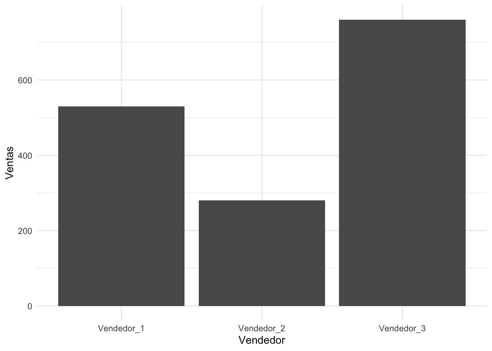

vector <- c(1,2,3,NA,NA,NA)6 Limpieza y manejo de datos: Principales problemas y soluciones
El concepto de limpieza de (bases de) datos es en realidad muy ambiguo, ya que los métodos y pasos a seguir van a variar bastante considerando el objetivo final que tengamos, sin embargo, en este capítulos analizaremos ciertos conceptos y métodos clave que estarán (casi) siempre presentes en los métodos de limpieza y depuración de nuestros datos. En este punto ya estas familizarizado con el lenguaje base de R (estructuras, indexación, objetos, etc), por lo que para agilizar tu conocimiento nos ayudaremos de las librerías tidyr, dplyr y lubridate, las cuales fueron diseñadas específicamente para el manejo y/o arreglo de los datos con los que estemos trabajando.
Dicho lo anterior, en este capítulo entenderemos el proceso para detectar y corregir/eliminar datos que nos puedan causar problemas en etapas más avanzadas de nuestro análisis. Cuando nos referimos a datos que nos causen problemas podemos considerar aquellas observaciones que están corruptas, es decir, que directamente son un error de captura, aquellas que simplemente sean datos anómalos pero verdaderos, información faltante o incluso columnas que tengan que ser retrabajadas completamente. Dependiendo de cual sea el caso puede que el método de limpieza varíe, por lo que se procurará analizar diferentes situaciones y cómo abordarlas dependiendo del objetivo que tengas, lo que permitirá que cuando te enfrentes a estos problemas en tu vida laboral hayas podido desarrollar una asertividad para superar con éxito estos retos.
6.1 Datos limpios = buen análisis.
Los ejercicios con datasets de muestra como iris, mtcars, entre otros, nos permiten ir entendiendo ciertos análilis comunes, como la estadística descriptiva que podemos obtener de ellos o algunos pronósticos, pero el verdadero reto comienza con la información real de una empresa, ya que constantemente nos encontraremos con datos que requieren un árduo trabajo de limpieza, pero ¿por qué es tan necesario hacer esto? ¿no podríamos simplemente ignorar lo que no nos sirve e ir directo al análisis? Es cierto que habrá casos específicos en los que esto es posible debido a la naturaleza de los resultados que queremos obtener, sin embargo, en casi cualquier otra situación será necerasio el hacer un tratamiento previo a los datos con los que estemos trabajando, para muestra de ello veamos el siguiente ejemplo: Imagina que quieres obtener el promedio de un vector cualquiera, el cual tiene múltiples valores NA, como el siguiente:
Aquí tenemos dos alternativas: Obtener el promedio simplemente con la función mean() utilizando el parámetro na.rm = F para que no tome en cuenta los valores nulos, o podemos convertir valores nulos a 0 y obtener la media del vector. Veamos ambos casos:
# Primer método
mean(c(1,2,3,NA,NA,NA), na.rm = T)[1] 2# Segundo método
mean(c(1,2,3,0,0,0))[1] 1Lógicamente, el resultado es diferente ya que mientras el primer cálculo elimina los elementos NA y hace un promedio solamente entre los tres elementos restantes, en el segundo cálculo se hace un problemdio entre los seis elementos existentes, donde los valores 0 tenderán a acercar el valor del promedio cada vez más a este último. En este ejemplo ¿Cuál es la respuesta correcta? En realidad esto depende de la situación en específico y lo que signifique el valor NA, por ejemplo, si hablamos de una tabla que contenga registros de ingresos por pedidos, donde los valores NA representen casos de pedidos cancelados, en esta situación lo más conveniente será eliminar los valores NA, ya que en caso de convertirlos a 0 tendremos un promedio de ingresos por pedidos más cercano a 0. Pensemos en otro tipo de información, como una tabla de registros de deudas de tarjetas de crédito, donde los valores NA representen observaciones donde los usuarios de la tarjeta mantengan su deuda pagada, en tal caso será más conveniente convertir dichos valores a 0, ya que de esta forma podremos tener un promedio de deuda por cliente mucho más exacto.
Como puedes ver, un cálculo tan simple como el promedio requiere un completo análisis de la situación y el contexto general, para poder determinar cuál será el valor más correcto, razón por la que la limpieza de datos dependerá enteramente del entendimiento del panorama en cuestión.
6.2 Tratamiento de valores NA y valores NULL
Ahora que tenemos un entendimiento inicial de la importancia de manejar correctamente este tipo de valores es cuando podemos pasar a la parte técnica. Vamos a dividir la resolución de este problema en dos vertientes: Eliminación y reemplazo de los NA.
6.2.1 Eliminación del problema.
Supongamos una tabla que muestre alturas de personas, así como su peso y edad, por ejemplo:
library(dplyr)Warning: package 'dplyr' was built under R version 4.2.3
Attaching package: 'dplyr'The following objects are masked from 'package:stats':
filter, lagThe following objects are masked from 'package:base':
intersect, setdiff, setequal, unionlibrary(tidyr)
# Establecemos una semilla para mantener los mismos datos de muestra
set.seed(200)
medidas <- tibble(
altura = sample(150:200, 8, replace = T),
peso = sample(50:120, 8, replace = T),
edad = sample(c(NA, 15:19), 8, replace = T)
)
medidas# A tibble: 8 × 3
altura peso edad
<int> <int> <int>
1 187 113 19
2 199 103 16
3 196 105 17
4 189 76 19
5 172 93 18
6 177 73 19
7 193 110 19
8 175 69 17La columna edad en este caso cuenta con tres valores NA. Una forma sencilla de eliminarlos rápidamente es mediante la función na.omit(), tal que:
medidas |>
na.omit()# A tibble: 8 × 3
altura peso edad
<int> <int> <int>
1 187 113 19
2 199 103 16
3 196 105 17
4 189 76 19
5 172 93 18
6 177 73 19
7 193 110 19
8 175 69 17Esta función elimina enteramente las filas en las que se encuentre al menos una observación con NA en una columna, por lo que se convierte en la forma más eficiente de eliminar estos valores, pero a su vez lo convierte en un método bastante agresivo. Podemos ser más específicos y solamente centrarnos en los valores de una única columna utilizando la función filter() de la librería dplyr, tal que:
medidas |>
filter(is.na(edad) == FALSE)# A tibble: 8 × 3
altura peso edad
<int> <int> <int>
1 187 113 19
2 199 103 16
3 196 105 17
4 189 76 19
5 172 93 18
6 177 73 19
7 193 110 19
8 175 69 17Toda la fila en la que se encuentren los valores NA será eliminada, aunque ahora solo aplicará para valores encontrados en la columna seleccionada (edad en este caso). De igual forma, si queremos limitarnos a lenguaje base podemos utilizar indexación para filtrar, tal que:
medidas[is.na(medidas$edad) == FALSE,]# A tibble: 8 × 3
altura peso edad
<int> <int> <int>
1 187 113 19
2 199 103 16
3 196 105 17
4 189 76 19
5 172 93 18
6 177 73 19
7 193 110 19
8 175 69 17Aquí ya dependerá de preferencias personales, pero es innegable que la función filter() es mucho más amigable a la vista, además de ser compatible con los operadores de concatenación |>.
6.2.2 Reemplazando el problema: ¿con qué valor relleno el hueco?
Ciertamente no en todos los casos queremos eliminar los NA ya que el hecho de perder una fila entera puede ser bastante dañino cuando queramos realizar otros cálculos. Cuando en lugar de eliminar esa información decidimos reemplazarla con otros valores podemos optar por diferentes métodos, como la indexación para asignar valores 0, o bien utilizar la función replace_na() del paquete tidyr, la cual funciona de manera similar utilizando listas. Veamos ambos métodos:
# Mediante indexación
medidas[is.na(medidas$edad) == TRUE,] <- 0
# Mediante tidyr
medidas |>
replace_na(list(edad = 0))# A tibble: 8 × 3
altura peso edad
<int> <int> <int>
1 187 113 19
2 199 103 16
3 196 105 17
4 189 76 19
5 172 93 18
6 177 73 19
7 193 110 19
8 175 69 17En ambos casos debemos tomar en cuenta la columna en la que vamos a trabajar, pero ¿y si esto no fuera posible? A veces nos toparemos con casos en los que tenemos una tabla con 30, 40 o incluso más de 100 columnas, en las cuales no tendremos la seguridad de cuales columnas tienen valores NA, por lo ninguna de las soluciones anteriores parece ahora una buena opción, debido a la poca escalabilidad de esa lógica. Para resolver esta situación podemos hacer uso de la función mutate_if() de dplyr, la cual funciona transoformando todas las columnas que cumplan una condición utilizando otra función para dicha transformación. Obviamente, cuando tenemos columnas de carácter numérico vamos a reemplazar los NA con un número, por lo que debemos establecer una condición que solo considere a columnas numéricas, tal que:
medidas |>
mutate_if(is.numeric, replace_na, replace = 0)# A tibble: 8 × 3
altura peso edad
<int> <int> <int>
1 187 113 19
2 199 103 16
3 196 105 17
4 189 76 19
5 172 93 18
6 177 73 19
7 193 110 19
8 175 69 17Donde is.numeric se refiere a una evaluciación donde todas aquellas columnas que resulten en TRUE serán trabajadas. Lógicamente, si queremos reemplazar columnas no numéricas bastará con reemplazar el argumento is.numeric por is.character, resultando:
medidas |>
mutate_if(is.character, replace_na, replace = "Otro")# A tibble: 8 × 3
altura peso edad
<int> <int> <int>
1 187 113 19
2 199 103 16
3 196 105 17
4 189 76 19
5 172 93 18
6 177 73 19
7 193 110 19
8 175 69 17Ahora, en el caso anterior usamos un valor específico para hacer el reemplazo de información faltante, pero esa no siempre es una solución viable. Supongamos que queremos sacar un cálculo de promedio aproximado, en tal caso podemos hacer uso del valor anterior o valor siguiente, dependiendo de cual sea el caso, por ejemplo:
medidas |>
mutate(edad = if_else(is.na(edad) == TRUE,lag(edad),edad))# A tibble: 8 × 3
altura peso edad
<int> <int> <int>
1 187 113 19
2 199 103 16
3 196 105 17
4 189 76 19
5 172 93 18
6 177 73 19
7 193 110 19
8 175 69 17En este caso hicimos uso del valor anterior mediante la función if_else() que funciona de manera similar que el condicional de mismo nombre, siendo compatible con funciones de transformación de columnas mutate(), sin embargo, al tener dos NA consecutivos seguiremos teniendo un faltante. Intentemos hacer uso del promedio de la columna, es decir:
medidas |>
mutate(edad = if_else(is.na(edad) == TRUE,
round(mean(edad, na.rm = T)),
edad))# A tibble: 8 × 3
altura peso edad
<int> <int> <dbl>
1 187 113 19
2 199 103 16
3 196 105 17
4 189 76 19
5 172 93 18
6 177 73 19
7 193 110 19
8 175 69 17En este caso es una solución más viable, aunque no totalmente recomendable en tablas donde la información es muy variable, ya que el promedio será tendencioso, ni tampoco en tablas con series de tiempo, ya que considerar el promedio con valores demasiado viejos, suponiendo que exista una evolución a la alza o a la baja, generará promedios que tengan poco sentido a nivel general, en dichas situaciones siempre será más recomendable generar un pronóstico mediante un modelo de series de tiempo, tema que discutiremos en capítulos posteriores.
6.3 Manejo de NaN e Inf
En ciertas ocasiones nos encontraremos con estos valores en nuestros datos, pero ¿qué significan? NaN es la abreviación de Not a Number y aparece en situaciones en las que un cálculo no está determinado en el campo de los números reales, como es el caso de i (la raíz de -1), como puedes ver a continuación:
sqrt(-1)Warning in sqrt(-1): NaNs produced[1] NaNPor su parte, Inf y -Inf simplemente son casos en los que un cálculo tiende a infinito, como es el caso de dividir cualquier número entre 0, por ejemplo:
# Positivo
1/0[1] Inf# Negativo
-1/0[1] -InfAhora, ¿cuál es el problema en estos casos? Lógicamente, al no poder asignar un número directamente cuando hagamos un cálculo hará que tengamos problemas al momento de querer hacer cálculos como promedios, sumas, etc, de las columnas. En el caso de NaN R lo interpreta como una variante de NA, por lo que su eliminación es mucho más sencilla y podemos aplicar los mismos métodos que trabajamos en la subsección anterior, caso contrario a Inf, siendo que argumentos como na.rm = TRUE no funcionan al no considerarlo una variante de NA, por ejemplo:
mean(c(1,2,3,Inf), na.rm = T)[1] InfEn estos casos debemos directamente hacer búsquedas de estos valores mediante evaluaciones como is.infinite() para poder eliminarlos/reemplazarlos, por ejemplo:
tabla_inf <- tibble(valores = c(1,2,3,Inf))
tabla_inf |>
mutate(valores = if_else(is.infinite(valores) == TRUE,
0,valores))# A tibble: 4 × 1
valores
<dbl>
1 1
2 2
3 3
4 0Si simplemente queremos filtrar dichas observaciones como ya lo hemos hecho anteriormente con otro tipo de valores, bastaría con hacer lo siguiente:
tabla_inf |>
filter(is.infinite(valores) == FALSE)# A tibble: 3 × 1
valores
<dbl>
1 1
2 2
3 3Pero llegados a este punto nos encontramos con otro inconveniente: Cuando eliminamos NA o NaN de forma masiva basta con que utilicemos la función na.omit(), pero en el caso de Inf no tenemos directamente una función que nos ayude con esto. En esta situación podemos hacer uso de las funciones filter_if() y all_vars() de dplyr, las cuales nos ayudarán a filtrar toda la tabla basándonos en una condición. Cuando filtramos datos lo más común es simplemente seleccionar la variable y la condución, pero cuando queremos escalar esto en tablas más grandes, lo más conveniente (en algunos casos) es realizar el filtrado de la siguiente manera:
tabla_inf |>
filter_if(
is.numeric,
all_vars(
!is.infinite(.)
)
)# A tibble: 3 × 1
valores
<dbl>
1 1
2 2
3 3¿Qué nos está diciendo la sentencia anterior? Primero, is.numeric simplemente es una evaluación para indicar que solo en columnas numéricas (que son aquellas donde puede haber un valor Inf) se va a aplicar el filtro, después la función all_vars() nos ayudará a poder introducir una función con signo negativo ! para búsqueda inversa (la función is.infinite(.) utiliza el punto dentro del argumento para indicar que hará la evaluación en cada fila de la tabla previamente concatenada), lo que nos devolverá todas aquellas filas donde no existan estos valores para toda la tabla. Lógicamente, podemos aplicar una lógica inversa y, en lugar de usar is.infinite() utilizar is.finite(), tal que:
tabla_inf |>
filter_if(
is.numeric,
all_vars(
is.finite(.)
)
)# A tibble: 3 × 1
valores
<dbl>
1 1
2 2
3 3Tenemos más opciones para el filtrado de estos datos, como utilizar la función filter_all que directamente hará el filtro independientemente del tipo de columnas, es decir:
tabla_inf |>
filter_all(all_vars(!is.infinite(.) ))# A tibble: 3 × 1
valores
<dbl>
1 1
2 2
3 3También tenemos la opción de hacerlo a la inversa:
tabla_inf |>
filter_all(all_vars(is.finite(.) ))# A tibble: 3 × 1
valores
<dbl>
1 1
2 2
3 3O utilizar filter_at(), función en la que si debemos establecer un rango de columnas en las que se va a aplicar dicho filtro, sin embargo, esta función requiere que tengamos claras las columnas existentes de nuestra tabla, por lo que se vuelve poco útil al escalar estos métodos a tablas mucho más grandes.
Por supuesto, el uso de filtros para eliminar este tipo de valores no siempre será algo que necesitemos realizar. Si quisiéramos hacer un breve análisis del tipo de información que tenemos, es decir, valores erroneos o faltantes versus información correcta, necesariamente haríamos conteos de cada tipo de valor mediante evaluaciones de datos (ej. is.na(), is.infinite()). En el siguiente capítulo comenzaremos con el análisis exploratorio de datos, por lo que veremos con mayor profundidad las posibilidades en cuanto a análisis de datos de manera descriptiva.
6.4 Manejo de fechas y horas
Hasta ahora solo hemos rascado la superficie en tema de fechas, al ser un tema más extenso de lo que podría parecer. Usualmente, los análisis de datos en primera instancia suelen estar segmentados por periodos de tiempo (diarios, semanales, mensuales, etc) que permiten ver una evolución, además de poder utilizarlas para generar pronósticos y limitar nuestros datos, por lo que mantener un correcto formato en nuestras fechas se vuelve crucial si queremos tener un análisis de calidad. Debemos preguntarnos ¿Qué implica el tener un ‘correcto formato’? Hay que tomar esta frase con cierto cuidado, ya que no existe un formato que sea el correcto, simplemente tenemos diferentes formas de expresar una fecha, las cuales nos serán más o menos útiles dependiendo del contexto en el que nos encontremos, así como las transformaciones que necesitemos realizar. En la mayoría de los casos nos encontraremos con un formato de estilo yyyy-mm-dd, es decir, año-mes-día, el cual podemos expresar en R de la siguiente manera:
as.Date("2023-01-01", format = "%Y-%m-%d")[1] "2023-01-01"Para establecer un formato en particular, debemos utilizar un prefijo % al símbolo de la marca de tiempo a la que hagamos referencia, como lo son los días, meses, años, horas, minutos, segundos, etc. La función as.Date() solamente transforma una cadena de texto en un objeto de tipo date, pero no puede por si misma intercambiar el formato con el que visualizaremos la fecha. Para el ejemplo anterior establecimos un formato específico, sin embargo, este solo funciona ya que la cadena de texto coincide a nivel general en su estructura (separada por guiones -). Si quisiéramos modificar completamente la estructura de de nuestra cadena, podríamos hacer uso de la función strftime (abreviación de “string format time”) para modificarla, por ejemplo:
fecha <- "2023-01-01"
# Formato largo (%Y-%m-%d %H:%M:%S)
strftime(fecha,format = "%Y-%m-%d %H:%M:%S")[1] "2023-01-01 00:00:00"# Formato con diagonales (%Y/%m/%d)
strftime(fecha,format = "%Y/%m/%d")[1] "2023/01/01"# Formato invertido (%d/%m/%Y)
strftime(fecha,format = "%d/%m/%Y")[1] "01/01/2023"# Formato largo con zona horaria (%Y-%m-%d %H:%M:%S %Z)
strftime(fecha,format = "%Y-%m-%d %H:%M:%S %Z", tz = "UTC")[1] "2023-01-01 00:00:00 UTC"# Formato de texto
strftime(fecha,format = "%A, %d %B %Y")[1] "Sunday, 01 January 2023"Lógicamente, al incluir elementos adicionales como horas y minutos que no se encuentran en la cadena original, se devolverá el valor mínimo referente a la hora del día (00:00:00).
Sabiendo lo anterior, podemos decir con seguridad que no existe un formato específico de fechas que debamos utilizar, si no que nosotros vamos a adecuar el formato que necesitemos dependiendo de la fuente de nuestros datos y la forma en la que queramos expresarlo. La tabla Table 6.1 nos muestra los formatos de marca de tiempo disponibles a utilizar, con los cuales podemos hacer cualquier combinación que se nos ocurra, por ejemplo, combinando números con texto, tal que:
strftime(fecha,format = "%Y-%m-%d, %A")[1] "2023-01-01, Sunday"| Formato | Significado | Ejemplo |
|---|---|---|
| %a | Día de la semana abreviado | Fri,Sat,Sun |
| %A | Día de la semana sin abreviar | Friday, Sunday |
| %b | Nombre de mes abreviado | Jan, Feb, Apr |
| %B | Nombre de mes sin abreviar | January, February |
| %c | Fecha con hora en formato largo | Sun Apr 14 00:00:00 2024 |
| %C | Siglo (primeros dos digitos del año) | 20 (para 2024) |
| %d | Día del mes | 01-31 |
| %D | Fecha en formato ‘mm/dd/yy’ | 04/13/24 |
| %e | Día del mes sin prefijo ‘0’ en números 1-9 | 1-31 |
| %F | Fecha en formato ‘yyyy-mm-dd’ | 2024-04-13 |
| %g | últimos dos digitos del año | 24 (para 2024) |
| %G | El año de la semana en curso | 2024 |
| %h | Equivalente a ‘%b’ | Jan, Feb, Apr |
| %H | Hora del día en formato de 24 | 0-23 |
| %I | Hora del día en formato de 12 | 0-12 |
| %j | Días transcurridos en el año | 001-365 (366 en año bisiesto) |
| %m | Mes numérico del año | 01-12 |
| %M | Minuto numérico actual | 01-59 |
| %p | Indicador de tarde/mañana | AM-PM (AM por default) |
| %r | Indicador de tarde/mañana con hora del día, formato de 12 | 01:48:20 PM |
| %R | Hora del día (únicamente hora y minuto), formato de 24 | 13:48 |
| %S | Segundo actual | 01-59 |
| %T | Hora del día, formato de 24 | 13:48:20 |
| %u | Día de la semana numérico | 1-7 |
| %U | Semana del año numérica (con cambio de semana en domingo) | 00-53 |
| %V | Semana del año numérica (con cambio de semana en lunes) | 01-53 |
| %w | Día de la semana numérico | 0-6 |
| %W | Semana del año numérica (con cambio de semana en lunes) | 01-53 |
| %x | Fecha en formato local (‘mm/dd/yyyy’) | 04/13/2024 |
| %X | Hora en formato local (‘HH:MM:SS’) | 13:56:21 |
| %y | últimos dos dígitos del año | 24 |
| %Y | Año completo | 2024 |
| %z | Desplazamiento de la zona horaria respecto a UTC | -0500 (para 5 horas de diferencia) |
| %Z | Zona horaria | UTC,CST |
Conocer el formato de una fecha individual no siempre es suficiente, ya que habrá ocasiones en las que tratemos con múltiples formatos a la vez. Déjame contarte una pequeña anéctoda: Hace años, durante mi periodo como estudiante de economía, realicé encuentas a otros estudiante para una clase de estadística, alojando las respuestas en un formulario de Google Forms. Uno de los campos que los estudiantes debían llenar era respecto a su fecha de nacimiento, pero cometí el error de darles la libertad de escribir esa respueta como una cadena de texto, lo que inevitablemente terminó con demasiados formatos que eran incompatibles entre si, razón por lo que al querer transformar esa columna a tipo date en R, la mayoría de las observaciones eran convertidas a NA. Esta situación fue solucionada de forma rápida con la función parsedate de la librería del mismo nombre, la cual evalúa múltiples formatos de fechas hasta dar con uno en particular y poder retornar un formato unificado, por ejemplo:
# Unificación de formatos
fechas <- c("2023-01-01", "04-05-2023", "01/01/2013", "2023 jun 01")
parsedate::parse_date(fechas)[1] "2023-01-01 UTC" "2023-04-05 UTC" "2013-01-01 UTC" "2023-06-01 UTC"6.4.1 Operaciones con fechas.
Ya sabemos como funcionan las fechas a nivel estructura y, muy probablemente, las identificas como una simple cadena de caracteres altamente flexible. Al ser el siguiente paso lógico las operaciones que podemos realizar con las fechas, será necesario que comencemos a pensar en ellas como un número. Pensemos en la fecha de hoy, si intentamos convertir esa cadena a un número obtendremos el siguiente resultado:
as.numeric(Sys.Date())[1] 20618Ese número representa los días transcurridos entre la fecha “1970-01-01” y hoy. Las fechas en R son interpretadas de una forma numérica, por lo que fácilmente podemos hacer operaciones a ellas, tal que:
# Fecha actual más un día
Sys.Date()+1[1] "2026-06-15"Si queremos controlar de una manera más específica las marcas de tiempo con las que hagamos una operación, podemos hacer uso de la librería lubridate (paquete dedicado enteramente al manejo de fechas). Supongamos que queremos sumar años en lugar de días a la fecha actual, en tal caso haremos lo siguiente:
library(lubridate)
Attaching package: 'lubridate'The following objects are masked from 'package:base':
date, intersect, setdiff, unionSys.Date() %m+% years(1)[1] "2027-06-14"Siendo %m+% un operador de suma creado específicamente para fechas. Podemos hacer uso de las funciones seconds(),minutes(),hours(),days(),months() y years() para las diferentes marcas de tiempo con las que vayamos a hacer el cálculo. Por supuesto, también podemos restar marcas de tiempo intercambiando el signo con %m-%.
Estos casos se basan en sumar/restar marcas de tiempo ya establecidas, pero también podemos obtener la diferencia numérica entre dos fechas mediante la función difftime(), por ejemplo:
# Fechas a comparar
fecha_inicial <- as.Date("2010-01-01")
fecha_final <- as.Date("2015-10-01")
difftime(fecha_final, fecha_inicial, units = "days")Time difference of 2099 daysResultado que podemos convertir a diferentes amplitudes de tiempo, (“seconds”, “minutes”, “days”, “weeks”, “months”, etc), así como transformarlo únicamente a número, es decir:
as.numeric(difftime(fecha_final, fecha_inicial, units = "weeks"))[1] 299.8571Vamos a escalar un poco más el ejemplo anterior. Imaginemos que tenemos una tabla con fechas de uso de una tarjeta de crédito en una columna llamada “fecha_compra”, y la fecha de pago de la tarjeta en otra columna llamada “fecha_pago”; Si quisiéramos hacer un análisis breve para saber el tiempo promedio de pago de una tarjeta de crédito, podríamos calcular, valga la redundancia, el promedio de diferencias de tiempo. Comencemos por construir una tabla con fechas aleatorias:
# Establecemos una semilla para mantener los mismos datos aleatorios
set.seed(100)
# Secuencia de fechas
fecha_compra <- seq(as.Date("2020-01-01"), as.Date("2021-01-01"), by = 7)
# Tabla con datos aleatorios
tabla_fechas <- dplyr::tibble(
fecha_compra = sample(fecha_compra, 10),
numero_aleatorio = sample(1:100, 10, replace = T),
fecha_pago = fecha_compra + numero_aleatorio
) |>
dplyr::select(!numero_aleatorio)
# Visualizamos la tabla
tabla_fechas |>
head(5)# A tibble: 5 × 2
fecha_compra fecha_pago
<date> <date>
1 2020-03-04 2020-04-28
2 2020-09-16 2020-11-25
3 2020-11-25 2021-03-03
4 2020-06-17 2020-06-24
5 2020-04-01 2020-04-08Teniendo los datos, podemos proceder a calcular el promedio de tiempo, tal que:
# Cálculo de diferencias de tiempo
tabla_fechas <-
tabla_fechas |>
dplyr::mutate(
diferencia = difftime(
fecha_pago,fecha_compra
)
)
# Cálculo del promedio
mean(tabla_fechas$diferencia)Time difference of 49 daysPensemos en otro tipo de análisis. Si quisieramos calcular la cantidad de compras que se han realizado en una fecha específica, podríamos sencillamente hacer un conteo de las filas correspondientes a esa marca de tiempo, por ejemplo:
sum(tabla_fechas$fecha_compra == "2020-11-11")[1] 0Pero ¿y si quisiéramos saber cuantas compras se realizaron en un mes? En este caso podríamos hacer el cálculo mediante dos vías: Redondear fechas o separar los componentes de las fechas existentes. Para redondear una fecha a su valor más cercano en un rango de tiempo, podemos hacer uso de la función floor_date() de la librería lubridate, tal que:
tabla_fechas |>
dplyr::mutate(
fecha_compra = floor_date(fecha_compra, unit = "months")
) # A tibble: 10 × 3
fecha_compra fecha_pago diferencia
<date> <date> <drtn>
1 2020-03-01 2020-04-28 55 days
2 2020-09-01 2020-11-25 70 days
3 2020-11-01 2021-03-03 98 days
4 2020-06-01 2020-06-24 7 days
5 2020-04-01 2020-04-08 7 days
6 2020-10-01 2020-12-22 55 days
7 2020-06-01 2020-07-16 43 days
8 2020-05-01 2020-08-17 82 days
9 2020-02-01 2020-04-06 61 days
10 2020-01-01 2020-02-03 12 days Mientas que, si optamos por separar los componentes de la fecha, podemos hacerlo de la siguiente manera:
tabla_fechas |>
dplyr::mutate(
mes_compra = month(fecha_compra)
) # A tibble: 10 × 4
fecha_compra fecha_pago diferencia mes_compra
<date> <date> <drtn> <dbl>
1 2020-03-04 2020-04-28 55 days 3
2 2020-09-16 2020-11-25 70 days 9
3 2020-11-25 2021-03-03 98 days 11
4 2020-06-17 2020-06-24 7 days 6
5 2020-04-01 2020-04-08 7 days 4
6 2020-10-28 2020-12-22 55 days 10
7 2020-06-03 2020-07-16 43 days 6
8 2020-05-27 2020-08-17 82 days 5
9 2020-02-05 2020-04-06 61 days 2
10 2020-01-22 2020-02-03 12 days 1Si quisiéramos separar nuestros datos a otras marcas de tiempo, tenemos las siguientes funciones disponibles: second(), minute(), hour(), day(), week(), month() y year(). Por ahora nos limitaremos al ejemplo anterior a nivel mensual.
En cualquiera de los dos casos anteriores fuimos capaces de segmentar la información a un nivel mensual, por lo que ahora podemos seleccionar un mes y hacer el cálculo. Veamos el proceso en ambos casos:
# Método 1
metodo_1 <-
tabla_fechas |>
dplyr::mutate(
fecha_compra = floor_date(fecha_compra, unit = "months")
)
sum(metodo_1$fecha_compra == "2020-11-01")[1] 1# Método 2
metodo_2 <-
tabla_fechas |>
dplyr::mutate(
mes_compra = month(fecha_compra)
)
sum(metodo_2$mes_compra == 11)[1] 1Como puedes ver, para el primer método es necesario que escribamos la fecha completa, esto debido a que no se hizo una extracción de la columna como en el segundo método, si no que simplemente se redondearon los valores. Por supuesto que escribir únicamente el número de mes para realizar el conteo de transacciones es más práctico, pero no siempre será la mejor opción, ya que si tuviéramos datos de diferentes años, al extraer el número de mes y basarnos solo en ello, los datos estarán sesgados al considerar la información de otros años para el mismo cálculo. Es claro que para escoger la vía que usaremos para trabajar con nuestros datos es necesario tener un conocimiento completo de la información, ya que la misma respuesta puede ser correcta o incorrecta, dependiendo del contexto. Más adelante veremos como simplificar estos cálculos mediante agrupamientos de datos.
Vayamos ahora en un sentido inverso: Supongamos que tenemos información de años, meses y días pero no una columna de fechas como tal. Podemos construir fechas a partir de sus componentes mediante make_date() de la librería lubridate, o make_datetime() si incluimos información de horas del día, por ejemplo:
# Construcción de fechas por componentes
dia <- 10
mes <- 1
año <- 2020
make_date(day = dia, month = mes, year = año)[1] "2020-01-10"También podemos utilizar make_date() dentro de una función como mutate(), para trabajar de manera más eficiente la creación de datos, por ejemplo:
tabla_con_fechas |>
mutate(
fecha = make_date(
day = dia, month = mes, year = año
)
)¿Y si tuviéramos meses en un formato de texto (ej. “January”)? Directamente no podemos ligarlos a la función make_date(), ya que se encuentran como una cadena de caracteres, pero podríamos crear una función para resolver este problema. R por default nos proporciona dos vectores con los meses como cadenas de texto: month.abb y month.name, veamos su estructura:
# Meses
month.name [1] "January" "February" "March" "April" "May" "June"
[7] "July" "August" "September" "October" "November" "December" # Meses (abreviado)
month.name [1] "January" "February" "March" "April" "May" "June"
[7] "July" "August" "September" "October" "November" "December" Sabemos que estos vectores se encuentran ordenados, por lo que sencillamente podemos usar la función match() para detectar la posición de uno de sus elementos, la cual va a coincidir con el número de mes, número que utilizaremos para crear la fecha, por ejemplo:
match("June", month.name)[1] 6Por supuesto, esto solo funciona si escribimos correctamente el mes. Podríamos convertir todos los caracteres a minúsculas para tratar de minimizar errores en búsquedas, es decir:
mes <- "JUNE"
match(tolower(mes), tolower(month.name))[1] 6En este caso estamos utilizando el nombre completo del mes, pero podríamos generar una condición para cada caso específico dentro de una función:
# Función para obtener el mes
mes_numerico <- function(mes, abreviado = FALSE){
mes <- tolower(mes)
if (abreviado == TRUE){
x <- match(mes, tolower(month.abb))
}else{
x <- match(mes, tolower(month.name))
}
return(x)
}
# Probando la función con diferentes formatos
mes_numerico("DECEMBER", abreviado = F)[1] 12mes_numerico("Nov", abreviado = T)[1] 11Finalmente, vamos a combinar esta función con make_date():
# Parámetros
dia <- 10
mes <- "march"
año <- 2020
make_date(day = dia, month = mes_numerico(mes), year = año)[1] "2020-03-10"De esta forma simplificamos mucho del trabajo que nos podría causar el tener datos con diferentes formatos, al crear fechas/horas.
6.4.2 Estructurando series de tiempo
Más adelante daremos un vistazo más detallado a datos de series de tiempo, sus componentes, pronósticos, modelos y descomposición, pero ahora mismo explicaré brevemente cómo se crean a partir de fechas.
6.5 Manejo de duplicados
Al igual que el tratamiento que se le dan a valores nulos o incorrectos, la eliminación/tratamiento de valores duplicados depende enteramente del contexto, no solo de los datos, si no también de los resultados que busquemos. Para ejemplificar esta idea, veamos la siguiente tabla hipotética que registra órdenes de compra en una tienda:
| Numero_de_orden | Pais | Estado | Producto |
|---|---|---|---|
| 1 | Mexico | CDMX | Libro |
| 1 | Mexico | CDMX | Fruta |
| 2 | Mexico | Guadalajara | Fruta |
| 3 | Mexico | Nuevo Leon | Carne |
En este simple caso podemos identificar dos tipos de valores duplicados: Aquellos que coinciden toda una columna y aquellos que únicamente coinciden valores de una fila. Podemos identificar duplicados mediante la función duplicated(), la que identificará diferentes filas, dependiendo del nivel al que queramos verlo, por ejemplo, si quisiéramos devolver duplicados aplicables a toda la tabla:
repetidos <-
dplyr::tibble(
Numero_de_orden = c(1,1,2,3),
Pais = c("Mexico","Mexico","Mexico","Mexico"),
Estado = c("CDMX","CDMX","Guadalajara", "Nuevo Leon"),
Producto = c("Fruta", "Fruta", "Libro", "Carne")
)
duplicated(repetidos)[1] FALSE TRUE FALSE FALSEO de una columna en particular:
duplicated(repetidos$Producto)[1] FALSE TRUE FALSE FALSEComo puedes observar, esta función considera a la primer observación como el valor original, mientras que al segundo valor detectado (y valores subsecuentes) como el duplicado. Tomando en cuenta lo anterior, podemos usar indexación para seleccionar únicamente las filas originales, tal que:
repetidos[!duplicated(repetidos),]# A tibble: 3 × 4
Numero_de_orden Pais Estado Producto
<dbl> <chr> <chr> <chr>
1 1 Mexico CDMX Fruta
2 2 Mexico Guadalajara Libro
3 3 Mexico Nuevo Leon Carne Donde simplemente seleccionamos aquellas filas (utilizamos una coma al final del corchete para indicar que hablamos de filas en lugar de columnas) iguales a FALSE. Nótese que estoy usando un signo de exclamación ! que invierte los valores devueltos, es decir, devuelve las selecciones contrarias (o FALSE) a las que indicamos.
Lógicamente, podemos focalizar el resultado a duplicados detectados en una sola fila, es decir:
repetidos[!duplicated(repetidos$Pais),]# A tibble: 1 × 4
Numero_de_orden Pais Estado Producto
<dbl> <chr> <chr> <chr>
1 1 Mexico CDMX Fruta Mediante la función unique() podemos simplificar la eliminación de duplicados:
unique(repetidos)# A tibble: 3 × 4
Numero_de_orden Pais Estado Producto
<dbl> <chr> <chr> <chr>
1 1 Mexico CDMX Fruta
2 2 Mexico Guadalajara Libro
3 3 Mexico Nuevo Leon Carne Sin embargo, esta función devuelve los elementos únicos de un objeto, por lo que si, también podemos focalizarla a una columna, pero no tomará en cuenta otras columnas de la tabla en la respuesta.
Usando la librería dplyr también podemos eliminar duplicados mediante la función distinct(), por ejemplo:
library(dplyr)
repetidos |>
distinct()# A tibble: 3 × 4
Numero_de_orden Pais Estado Producto
<dbl> <chr> <chr> <chr>
1 1 Mexico CDMX Fruta
2 2 Mexico Guadalajara Libro
3 3 Mexico Nuevo Leon Carne O bien, para una sola columna:
repetidos |>
distinct(Pais, .keep_all = T)# A tibble: 1 × 4
Numero_de_orden Pais Estado Producto
<dbl> <chr> <chr> <chr>
1 1 Mexico CDMX Fruta En ambos casos el resultado (dependiendo del enfoque) será el mismo, pero ¿cuál es el correcto? Ambos lo son, simplemente dependerá del análisis que estemos realizando y el enfoque que necesitemos darle, por ejemplo, si quisiéramos identificar las órdenes únicas de compra, si buscaremos eliminar observaciones repetidas aplicadas a todas las columnas, mientras que si quisiéramos saber únicamente la cantidad de estados en los que se realizan órdenes, podríamos centrarnos en eliminar duplicados de dicha columna y hacer un conteo de filas, es decir:
# Estados únicos mediante indexación
repetidos[!duplicated(repetidos$Estado),] |>
nrow()[1] 3# Estados únicos mediante dplyr
repetidos |>
distinct(Estado) |>
nrow()[1] 3Ahora, también podemos eliminar duplicados basándonos en más de una columna mediante distinct_at() (seleccionando columnas con la función vars()), por ejemplo:
repetidos |>
distinct_at(vars(Estado, Producto),.keep_all = T)# A tibble: 3 × 4
Numero_de_orden Pais Estado Producto
<dbl> <chr> <chr> <chr>
1 1 Mexico CDMX Fruta
2 2 Mexico Guadalajara Libro
3 3 Mexico Nuevo Leon Carne O hacerlo de forma condicional mediante distinct_if():
repetidos |>
distinct_if(is.numeric, .keep_all = T)# A tibble: 3 × 4
Numero_de_orden Pais Estado Producto
<dbl> <chr> <chr> <chr>
1 1 Mexico CDMX Fruta
2 2 Mexico Guadalajara Libro
3 3 Mexico Nuevo Leon Carne Generalmente, el uso de duplicated() y distinct() será enfocado a un nivel más general, como limpiezas iniciales de tablas en las que busquemos duplicados de toda una fila, esto debido a que tenemos funciones como n_distinct() que simplificarán búsquedas focalizadas de duplicados en ciertas columnas, tal que:
n_distinct(repetidos$Estado)[1] 3En secciones posteriores veremos cómo combinar estas funciones con agrupamientos de datos de forma más dinámica, además de poder escoger la observación repetida que se quiera eliminar (basándonos en otras condiciones), pero por el momento, el conocimiento adquirido a lo largo de esta sección será más que suficiente para el correcto pre-procesamiento de tus datos en una etapa inicial del análisis.
6.6 Técnicas avanzadas para el manejo de duplicados
Infortunadamente, cuando buscamos valores duplicados en nuestros datos, no siempre encontraremos un match de forma directa, ya que al usar funciones como distinct() únicamente estaremos considerando aquellas cadenas que son exactamente iguales, siendo que en muchas ocasiones nos encontraremos con cadenas de texto que cuentan con variaciones mínimas pero, en esencia, siguen siendo registros duplicados, por ejemplo: Supongamos que estamos trabajando con una base de datos que registra placas de vehículos en una ciudad. Existe la posibilidad de que nos encontremos con casos en los que la misma placa fue registrada dos veces, sin embargo, puede que un registro sea AAA-01, mientras que el otro sea AAA01, refiriéndose ambos a la misma placa, pero con una pequeña variación que hará que nos sea imposible el poder descartar una de las observaciones mediante una función distinct(), como lo mencionamos anteriormente. ¿Qué podemos hacer en estos casos? Cuando buscamos coincidencias difusas existen algunos algoritmos que nos permiten comparar el nivel de similitud de las cadenas de texto, como la distancia de Levenstein o el algoritmo de Jaro-Winkler. Analicemos cada uno en las siguientes subsecciones.
6.6.1 Distancia de Levenstein
La idea tras este algorítmo es bastante sencilla: La Distancia de Levenstein mide la cantidad mínima de operaciones necesarias para transformar la cadena de texto \(X\) en la cadena \(Y\), a partir de las siguientes operaciones básicas: inserción, eliminación y sustitución. Podemos definir a la distancia de Levenstein como:
\[ D(i, j) = \begin{cases} \max(i, j) & \text{si } \min(i, j) = 0 \\ D(i-1, j) + 1 & \text{(eliminar un carácter de } s_1 \text{)} \\ D(i, j-1) + 1 & \text{(insertar un carácter en } s_1 \text{)} \\ D(i-1, j-1) + \text{costo} & \text{(sustituir un carácter, si son distintos)} \end{cases} \] Dadas dos cadenas \(s_1\) y \(s_2\), siendo el costo de sustitución:
\[ \text{costo} = \begin{cases} 0 & \text{si } s_1[i] = s_2[j] \\ 1 & \text{si } s_1[i] \neq s_2[j] \end{cases} \]
En otras palabras, cada modificación necesaria para transformar una cadena en otra, como insertar, eliminar o sustituir un carácter, suma una unidad a la distancia de Levenshtein. Así, un valor de 0 indica que ambas cadenas son idénticas, y mientras mayor sea este valor, más diferencias existen entre ellas (Hernández 2025).
Por supuesto, vamos ahora a ver cómo aplicar este algorítmo en R. Si bien existen librerías ya establecidas para este algorítmo, como el paquete levenshteinDist, en esta ocasión me interesa que conozcas como crear una estructura que siga esa lógica, para entenderla a profunidad. Vamos a crear la función respectiva a ello:
levenshtein <- function(s1, s2){
s1_len <- nchar(s1)
s2_len <- nchar(s2)
# Si alguna cadena está vacía, la distancia es la longitud de la otra
if (s1_len == 0) return(s2_len)
if (s2_len == 0) return(s1_len)
# Inicialización de las filas del algoritmo
v0 <- 0:s2_len
v1 <- integer(s2_len + 1)
for (i in 1:s1_len){
v1[1] <- i
for (j in 1:s2_len){
cost <- ifelse(substr(s1, i, i) == substr(s2, j, j), 0, 1)
v1[j + 1] <- min(
v1[j] + 1, # Inserción
v0[j + 1] + 1, # Eliminación
v0[j] + cost # Sustitución
)
}
# Intercambia v0 y v1
temp <- v0
v0 <- v1
v1 <- temp
}
return(v0[s2_len + 1])
}Esta función toma dos cadenas s1 y s2 (sin una longitud máxima establecida) y devuelve un número entero que representa la distancia de Levenshtein entre ambas. Las variables utilizadas en el cálculo son:
s1_lenys2_len: Almacenan la longitud de las cadenass1ys2, respectivamente, utilizando la funciónnchar().iyj: Son los contadores usados en los bucles que recorren los caracteres de cada cadena.cost: Representa el costo de sustitución entre dos caracteres. Es 0 si los caracteres son iguales y 1 si son diferentes.v0yv1: Son vectores que representan las filas actuales y anteriores de la matriz de distancias, utilizadas para calcular el valor mínimo en cada paso del algoritmo.temp: Se usa como variable auxiliar para intercambiar los vectoresv0yv1al final de cada iteración externa.substr(s1, i, i)ysubstr(s2, j, j): Extraen los caracteres individuales de cada cadena para la comparación.
Vamos ahora a probar la función con dos cadenas sencillas:
# Distancia esperada: 1
levenshtein("gato", "pato")[1] 1# Distancia esperada: 4
levenshtein("gato", "xxxx")[1] 4La función que creamos para la Distancia de Levenstein es genial, pero no necesariamente nos servirá para la eliminación de duplicados en un uso práctico, ya que únicamente nos dice qué cantidad de cambios se necesitan para transformar una cadena de texto a otra. Para hacer un comparativo real, podríamos modificar la función original para calcular un ratio que vaya de 0 a 100, dependiendo del porcentaje de similitud entre ambas cadenas a comparar. Este ratio se calcula mediante:
\[ Ratio = 1 - \frac{\text{distancia Levenstein} }{\max\left(\text{longitud}(s_1), \text{longitud}(s_2)\right)} \]
Por lo tanto, aplicado a la función en R:
levenshtein_similarity <- function(s1, s2){
s1_len <- nchar(s1)
s2_len <- nchar(s2)
# Si ambas cadenas están vacías, son idénticas
if (s1_len == 0 && s2_len == 0) return(1)
# Si una de las cadenas está vacía, la similitud es 0
if (s1_len == 0 || s2_len == 0) return(0)
# Inicialización
v0 <- 0:s2_len
v1 <- integer(s2_len + 1)
for (i in 1:s1_len){
v1[1] <- i
for (j in 1:s2_len){
cost <- ifelse(substr(s1, i, i) == substr(s2, j, j), 0, 1)
v1[j + 1] <- min(
v1[j] + 1, # Inserción
v0[j + 1] + 1, # Eliminación
v0[j] + cost # Sustitución
)
}
temp <- v0
v0 <- v1
v1 <- temp
}
# Cálculo del índice de similitud
distancia <- v0[s2_len + 1]
similitud <- 1 - (distancia / max(s1_len, s2_len))
return(similitud)
}Vamos ahora a probarlo con los mismos ejemplos:
# Resultado esperado: 1- (un valor de 4)
levenshtein_similarity("gato", "pato")[1] 0.75# Ejemplo con una cadena más larga
levenshtein_similarity("Cadena de texto más larga",
"tCadena de texto más largaa")[1] 0.9259259Ahora que si tenemos un parámetro que vaya de 0 a 100 respecto a la similitud entre cadenas, podemos descartar como duplicados a todos ellos que tengan una similitud mayor a un cierto valor, como 90%, 95%, etc.
6.6.2 Algoritmo de Jaro-Winkler
La idea detrás del algoritmo de Jaro-Winkler es igualmente intuitiva: a diferencia de la Distancia de Levenshtein, que se basa en operaciones de edición, la Distancia de Jaro mide la similitud entre dos cadenas considerando coincidencias y transposiciones. Posteriormente, la variante Winkler mejora esta métrica al dar mayor peso a los prefijos coincidentes al inicio de las cadenas, asumiendo que los errores suelen estar al final.
Dado lo anterior, podemos definir la similitud de Jaro entre dos cadenas \(s_1\) y \(s_2\) como:
\[ J = \begin{cases} 0 & \text{si } m = 0 \\ \frac{1}{3} \left( \frac{m}{|s_1|} + \frac{m}{|s_2|} + \frac{m-t}{m} \right) & \text{en otro caso } \end{cases} \] Donde:
\(m\) es el número de caracteres coincidentes (en el mismo orden y dentro de una distancia máxima permitida).
\(t\) es el número de transposiciones dividido entre 2.
\(|s_1|\) y \(|s_2|\) son las longitudes de las cadenas.
Subsecuentemente, la similitud de Jaro-Winkler se puede definir como:
\[ JW = J + (l*p* (1 - J)) \]
Donde:
\(J\) es la similitud de Jaro.
\(l\) es la longitud del prefijo común entre las dos cadenas (máximo 4).
\(p\) es un factor de escala (generalmente \(p = 0.1\)).
Vamos ahora a crear una función que replique la lógica del algoritmo de JW:
jaro_winkler_similarity <- function(s1, s2, p = 0.1){
s1_len <- nchar(s1)
s2_len <- nchar(s2)
if (s1_len == 0 && s2_len == 0) return(1.0)
if (s1_len == 0 || s2_len == 0) return(0.0)
match_distance <- floor(max(s1_len, s2_len) / 2) - 1
s1_flags <- rep(FALSE, s1_len)
s2_flags <- rep(FALSE, s2_len)
matches <- 0
transpositions <- 0
# Contar coincidencias
for (i in seq_len(s1_len)){
start <- max(1, i - match_distance)
end <- min(i + match_distance, s2_len)
for (j in start:end){
if (!s2_flags[j] && substr(s1, i, i) == substr(s2, j, j)) {
s1_flags[i] <- TRUE
s2_flags[j] <- TRUE
matches <- matches + 1
break
}
}
}
if (matches == 0) return(0.0)
# Contar transposiciones
k <- 1
for (i in seq_len(s1_len)) {
if (s1_flags[i]) {
while (!s2_flags[k]) k <- k + 1
if (substr(s1, i, i) != substr(s2, k, k)) {
transpositions <- transpositions + 1
}
k <- k + 1
}
}
jaro <- (matches / s1_len + matches / s2_len +
(matches - transpositions / 2) / matches) / 3
# Longitud del prefijo común (máximo 4)
prefix_len <- 0
for (i in 1:min(4, s1_len, s2_len)) {
if (substr(s1, i, i) == substr(s2, i, i)) {
prefix_len <- prefix_len + 1
} else {
break
}
}
# Similitud final con ajuste Winkler
jw <- jaro + (prefix_len * p * (1 - jaro))
return(jw)
}Directamente, esta función toma dos cadenas s1 y s2 (sin una longitud máxima establecida) y devuelve un número decimal entre 0 y 1 que representa la similitud Jaro-Winkler entre ambas. Las variables utilizadas en el cálculo son:
s1_lenys2_len: Almacenan la longitud de las cadenass1ys2, respectivamente, utilizando la funciónnchar().match_distance: Define el rango permitido de búsqueda de coincidencias dentro de cada cadena, basado en la longitud de la cadena más larga.s1_flagsys2_flags: Vectores booleanos que indican si un carácter en una cadena ya ha sido emparejado con otro.matches: Cuenta la cantidad total de caracteres coincidentes entre ambas cadenas dentro de la distancia permitida.transpositions: Cuenta cuántas de esas coincidencias están fuera de orden (es decir, no están alineadas).jaro: Calcula la similitud base Jaro a partir de coincidencias y transposiciones.prefix_len: Representa la longitud del prefijo coincidente inicial (máximo 4 caracteres).p: Es el factor de ajuste del prefijo en el algoritmo de Winkler (por defecto 0.1).jw: Resultado final de la similitud Jaro-Winkler.
Vamos ahora a probar la función con un ejemplo sencillo, comparándola con la Distancia de Levenstein:
# Jaro-Winkler
jaro_winkler_similarity("gato", "pato")[1] 0.8333333# Levenstein
levenshtein_similarity("gato", "pato")[1] 0.75Como puedes ver, a pesar de tener las mismas cadenas, obtenemos resultados particulares para cada algoritmo. La diferencia entre los valores de similitud obtenidos con Levenshtein (0.75) y Jaro-Winkler (0.83) al comparar las mismas cadenas se debe a la forma en que cada algoritmo mide la similitud. Levenshtein calcula el número mínimo de operaciones necesarias para transformar una cadena en otra (en este caso, una sola sustitución), y normaliza la distancia según la longitud de la cadena, lo que da como resultado 0.75. En cambio, Jaro-Winkler se enfoca en las coincidencias de caracteres en posiciones similares y premia el orden y los prefijos comunes; aunque “g” y “p” difieren, las tres letras restantes coinciden y están en el mismo orden, lo cual genera una similitud más alta.
Tampoco debemos quebrarnos la cabeza sobre qué tipo de algoritmo usar, esto ya dependerá de cada caso particular y de la sensibilidad que necesitemos para comparar las similitudes entre cadenas.
6.7 Entendiendo el uso de los filtros
Como sabemos, los filtros no son más que formas de segmentar y limitar nuestros datos a ciertos parámetros que necesitamos ver, como un rango de fechas/valores o una igualdad que deba cumplirse en una determinada columna (ej. Devolver únicamente valores iguales a “VERDADERO”), lo que en SQL es equivalente al uso de un WHERE. Los filtros no solo nos ayudan a limitar nuestros datos, también funcionan para aplicar ciertas reglas o cálculos a filas específicas, por ejemplo: Imagina que, de nuestra tabla de muestra iris quisiéramos reemplazar todos los valores de la columna Sepal.Length a 0, únicamente para la especie setosa, en tal caso aplicaríamos un filtro para la columna Species, de la siguiente manera:
iris$Sepal.Length[iris$Species == "setosa"] <- 0Lo que limitará el reemplazo de datos únicamente al rango que nosotros especifiquemos.
Hasta ahora ya hemos trabajado con filtros aplicables mediante indexación o el uso de filter(), pero es de suma importancia que sepas utilizar cada uno de sus operadores correctamente. Comencemos por enlistar cada uno de los operadores disponibles:
| Filtro | Significado |
|---|---|
| == | Igualdad |
| != | Diferente a |
| > | Mayor que |
| < | Menor que |
| >= | Mayor o igual que |
| <= | Menor o igual que |
| %in% | Conjunto de valores |
| | | Ó (más de una condición) |
| & | Y (más de una condición) |
Como ya te habrás dado cuenta (en caso de que no hayas pasado por alto el capítulo referente a SQL), no tenemos propiamente un operador equivalente a LIKE1 ni BETWEEN2, por lo que tendremos que recurrir a funciones alternativas para filtrar de manera similar a dichas sentencias en SQL. En el caso de BETWEEN podemos utilizar la función between() de la librería dplyr, la cual funciona de manera similar, al buscar datos dentro de un rango de números/fechas, por ejemplo:
tibble(
numeros = 1:10
) |>
filter(between(numeros, 5,7))# A tibble: 3 × 1
numeros
<int>
1 5
2 6
3 7En el caso de LIKE podemos utilizar la función str_detect() de la librería stringr para encontrar patrones de texto específicos, o bien usar grepl(), función ya incluída en el lenguaje base. Veamos un ejemplo sencillo con ambas funciones:
tabla_cadena <-
tibble(nombres = c("Jorge", "Eduardo", "Hector"))
# Búsqueda de 6 letras seguidas mediante str_detect()
tabla_cadena |>
filter(stringr::str_detect(nombres, "[a-z]{6}"))# A tibble: 1 × 1
nombres
<chr>
1 Eduardo# Búsqueda de 6 letras seguidas mediante grepl()
tabla_cadena |>
filter(grepl("[a-z]{6}",nombres))# A tibble: 1 × 1
nombres
<chr>
1 EduardoEn el capítulo anterior vimos más a fondo el uso de reglas para las expresiones regulares, por lo que no ahondaremos en su estructura para esta sección y solo nos limitaremos a explicar como aplicarlas mediante un filtro.
Regresemos a los operadores que podemos utilizar de manera nativa. Tomemos como ejemplo la tabla USArrests de muestra, la cual contiene información de crímenes violentos en USA para 1973, por cada 100 mil habitantes. Cuando trabajamos con el filtrado de datos, esto lo hacemos (casi siempre) a partir de una pregunta que nos hacen, referente a la información disponible, por ejemplo: ¿En qué estados de USA hubo más de 300 asaltos en 1973, por cada 100 mil habitantes? Para responder esa pregunta bastará con filtrar la tabla USArrests con dicha condición, es decir:
USArrests |>
filter(Assault > 300) Murder Assault UrbanPop Rape
Florida 15.4 335 80 31.9
North Carolina 13.0 337 45 16.1Pensemos en una pregunta más retadora, por ejemplo: ¿En qué estados hubo más de 5 asesinatos y menos de 100 asaltos, por cada 100 mil personas? Para responder esta pregunta debemos utilizar ambos filtros con un operador &, tal que:
USArrests |>
filter(Assault < 100 & Murder > 5) Murder Assault UrbanPop Rape
Hawaii 5.3 46 83 20.2
West Virginia 5.7 81 39 9.3El operador &, como ya se mencionó en la tabla previa, nos indica que ambas condiciones se deben cumplir. Si la pregunta implicara que solo se debe cumplir al menos una condición, el operador a utilizar sería |, como puedes ver a continuación:
USArrests |>
filter(Assault < 100 | Murder > 5) |>
head(10) Murder Assault UrbanPop Rape
Alabama 13.2 236 58 21.2
Alaska 10.0 263 48 44.5
Arizona 8.1 294 80 31.0
Arkansas 8.8 190 50 19.5
California 9.0 276 91 40.6
Colorado 7.9 204 78 38.7
Delaware 5.9 238 72 15.8
Florida 15.4 335 80 31.9
Georgia 17.4 211 60 25.8
Hawaii 5.3 46 83 20.2Vamos ahora a subir un poco más el nivel de dificultad con la siguiente pregunta: ¿En cuales estados hubo al menos 10 asesinatos y 30 violaciones, o al menos 300 asaltos? Comencemos por analizar cada condición por separado: La pregunta nos dice que debe haber al menos un determinado número, y no más de un cierto número de casos, por lo que el número de cada condición también deberá ser incluído en el conjunto de datos a filtrar, razón por la que utilizaremos >= y no solo >. Lo siguiente que nos dice esta pregunta es que las dos condiciones que se deben cumplir juntas son la cantidad mínima de asesinatos y violaciones, mientras que la cantidad de asaltos es una condición independiente al cumplimiento de las dos anteriores. Obviamente, los operadores que estamos utilizando siguen las reglas de jerarquía matemática, por lo que para unir las dos primeras condiciones y separarlas de la condición final, simplemente utilizaremos un paréntesis:
USArrests |>
filter((Murder >= 10 & Rape >= 30) | Assault > 300) Murder Assault UrbanPop Rape
Alaska 10.0 263 48 44.5
Florida 15.4 335 80 31.9
Michigan 12.1 255 74 35.1
Nevada 12.2 252 81 46.0
New Mexico 11.4 285 70 32.1
North Carolina 13.0 337 45 16.1Probemos con información más específica, por ejemplo: ¿Cuantos asaltos han ocurrido en los estados de Michigan y Nevada? Esta de hecho es una pregunta más sencilla de responder mediante un filtro, a la que solo debemos añadirle un paso extra. La columna con el nombre de los estados actualmente es el índice de la tabla, por lo que debemos transformarla a una columna adicional con un nombre, lo que podemos hacer mediante la función rownames_to_column() de la librería tibble. Teniendo dicha columna podremos aplicar el filtro siguiente:
USArrests |>
tibble::rownames_to_column("Estado") |>
filter(Estado %in% c("Michigan", "Nevada")) Estado Murder Assault UrbanPop Rape
1 Michigan 12.1 255 74 35.1
2 Nevada 12.2 252 81 46.0Si quisiéramos obtener el resultado contrario, es decir, la información de todos los estados excepto los seleccionados, bastará con usar el operador ! de la siguiente manera:
USArrests |>
tibble::rownames_to_column("Estado") |>
filter(!Estado %in% c("Michigan", "Nevada"))El uso del operador ! para invertir la lógica de los resultados es recomendable en cadenas de caracteres, ya que para filtros de valores numéricos puede resultar confuso.
6.8 Decodificación y arreglo de cadenas
A diferencia de la sección sobre extracción de datos no estructurados (vease Section 5.4.1), donde analizamos formas de extraer datos concretos de cadenas de texto mediante expresiones regulares, esta sección verá el manejo de cadenas de texto desde una perspectiva más general, en la que no solo vamos a extraer datos de esta clase, si no que además vamos a homologarlos, transformarlos y eliminar ciertos caracteres que usualmente no nos serán útiles (como los conectores lógicos).
Comencemos esta sección con las siguientes cadenas de texto:
cadenas <- c("Hola, me llamo Eduardo y tengo 20 años",
"Hola, me llamo Roberto y tengo 45 años",
"Hola, me llamo Maribel y tengo 15 años")Supongamos que quisiéramos saber la edad promedio de las personas mencionadas en estas frases, ¿Cómo hacemos esto? Por si solas, las cadenas de caracteres no nos permiten realizar cálculos de tipo numéricos (como promedios) por razones obvias, por lo que tendremos que hacer uso de una expresión regular para ello, por ejemplo:
library(dplyr)
cadenas |>
as_tibble() |>
mutate(
edad = as.numeric(
stringr::str_extract(
value, "\\b\\d{2}\\b"
)
)
)# A tibble: 3 × 2
value edad
<chr> <dbl>
1 Hola, me llamo Eduardo y tengo 20 años 20
2 Hola, me llamo Roberto y tengo 45 años 45
3 Hola, me llamo Maribel y tengo 15 años 15Claro, aún nos queda la incertidumbre respecto a casos en los que haya menos (o más) de dos dígitos, por lo que podemos establecer una expresión regular para obtener dígitos a partir de un intervalo de números:
cadenas |>
as_tibble() |>
mutate(
edad = as.numeric(
stringr::str_extract(
value, "\\b\\d{1,3}\\b"
)
)
)# A tibble: 3 × 2
value edad
<chr> <dbl>
1 Hola, me llamo Eduardo y tengo 20 años 20
2 Hola, me llamo Roberto y tengo 45 años 45
3 Hola, me llamo Maribel y tengo 15 años 15Esto es genial, ya que de una forma muy práctica resolvimos este problema, pero no es el único tema al que nos vamos a enfrentar cuando trabajemos con cadenas de caracteres.
6.8.1 Estandarización de cadenas
Retomemos la cadena anterior, supongamos que uno de sus elementos tiene las siguientes características en el nombre:
cadenas <- c("Hola, me llamo Eduardo y tengo 20 años",
"Hola, me llamo Roberto Marti\xadnez y tengo 45 años",
"Hola, me llamo Maribel y tengo 15 años")¿Qué signifca específicamente la cadena Marti\xadnez? En ciertas ocasiones, cuando trabajes con equipos internacionales que utilicen un lenguaje diferente, sus códigos utilizarán reglas de codificación propias, por ejemplo, el uso de letras específicas como ñ o acentos en las palabras no existen en inglés, por lo que al querer leer cadenas con estas características se nos devolverá una codificación equivalente que si sea compatible a este lenguaje. La codificación más usada actualmente es UTF-83, debido a su flexibilidad con otras codificaciones, sin embargo, es también común encontrarnos con la codificación latin-1, sobre todo en tablas que incluyan nombres de personas. La pregunta obvia en este punto es: ¿Este problema tiene solución? Si, y bastante sencilla. Para evitar retornar caracteres extraños en cadenas, simplemente debemos identificar la codificación de origen y transformarla a una codificación más universal, como lo es UTF-8, mediante la función iconv(), por ejemplo:
cadenas <- iconv(cadenas, "latin1", "UTF-8")
cadenas[1] "Hola, me llamo Eduardo y tengo 20 años"
[2] "Hola, me llamo Roberto Martinez y tengo 45 años"
[3] "Hola, me llamo Maribel y tengo 15 años" Claro que, en este caso específico, el uso de la letra ñ es particular del español, por lo que no es reconocido con la codificación UTF-8 directamente. Para estos casos más específicos podemos hacer uso de una transformación mucho más específica, en la que nos centremos únicamente en ciertos caracteres y los reemplacemos de forma manual, esto mediante la función gsub(), por ejemplo:
cadenas <- gsub("ñ", "ñ", cadenas)
cadenas[1] "Hola, me llamo Eduardo y tengo 20 años"
[2] "Hola, me llamo Roberto Martinez y tengo 45 años"
[3] "Hola, me llamo Maribel y tengo 15 años" Por supuesto, el reemplazo de elementos no solo se limita a caracteres específicos, también puede hacerse a partir de expresiones regulares, por ejemplo:
cadenas <- gsub("\\b\\d{1,3}\\b", "5", cadenas)
cadenas[1] "Hola, me llamo Eduardo y tengo 5 años"
[2] "Hola, me llamo Roberto Martinez y tengo 5 años"
[3] "Hola, me llamo Maribel y tengo 5 años" 6.8.2 Sub-cadenas
Extraer elementos específicos no siempre será nuestro objetivo. En ciertos casos buscaremos extraer datos por posición o cantidad de elementos, por ejemplo, imaginemos que realizamos una encuesta para obtener algunos RFC’s de personas físicas. Sabemos que un RFC para persona física contiene trece caracteres, por lo que aquellos que tengan más de la cuenta posiblemente tendrán errores tipográficos. En este caso podemos buscar extraer únicamente los primeros trece caracteres de la cadena (el RFC), para asegurarnos de tener únicamente los primeros caracteres válidos, mediante la función substr(), tal que:
# RFC's de ejemplo
rfc <- c("GOME650205HJ8", "LORC750412PJ942143", "CRUZ773AJ7")
# Extracción por cantidad de caracteres
substr(rfc,1,13)[1] "GOME650205HJ8" "LORC750412PJ9" "CRUZ773AJ7" Evidentemente, esto solo es aplicable en casos en los que la cadena tiene más caracteres de los que debería, ya que no tenemos forma de rellenar la información faltante en casos donde hayan escrito menos de los caracteres necesarios. En situaciones como la que acabamos de describir, algo que podemos hacer es identificar las cadenas que estan escritas incorrectamente y eliminarlas, algo que podemos hacer mediante un conteo de caracteres con la función nchar(). Vamos a establecer una condición para tratar de extraer la mayor cantidad de datos correctos posibles, esto basándonos en su longitud, por ejemplo:
rfc |>
as_tibble() |>
mutate(
rfc_correcto = case_when(
nchar(value) == 13 ~ value,
nchar(value) > 13 ~ substr(value, 1, 13)
)
)# A tibble: 3 × 2
value rfc_correcto
<chr> <chr>
1 GOME650205HJ8 GOME650205HJ8
2 LORC750412PJ942143 LORC750412PJ9
3 CRUZ773AJ7 <NA> 6.9 Una vista vertical: Tratamiento de columnas
El correcto tratamiento de una tabla no siempre se va a limitar a las observaciones en ella, en la mayoría de los casos comenzaremos nuestro análisis corrigiendo, moviendo y eliminando columnas, de tal forma que sea más sencillo visualizar e interpretar el resultado final. Aunque no lo parezca, el órden, el tipo e incluso el nombre de las columnas importa más de lo que crees.
6.9.1 Renombrando columnas
Comencemos con un arreglo sencillo: Modificar el nombre de las columnas tratadas. Usemos de ejemplo el siguiente data frame:
tabla_nombres <- dplyr::tibble(
`primer periodo` = as.Date("2010-01-01"),
`Ultimo Periodo` = as.Date("2024-01-01"),
`Valor inicial` = sample(100:200, 10, replace = T),
`valor FINAL ` = sample(500:1000, 10, replace = T),
`Notas del periodo` = "Notas de muestra"
)Como puedes ver, los nombres no tienen una coherencia respecto a letras mayúsculas, minúsculas o espacios, tema que podemos arreglar fácilmente usando la función clean_names() de la librería janitor, tal que:
tabla_nombres |>
janitor::clean_names() |>
head(5)# A tibble: 5 × 5
primer_periodo ultimo_periodo valor_inicial valor_final notas_del_periodo
<date> <date> <int> <int> <chr>
1 2010-01-01 2024-01-01 198 547 Notas de muestra
2 2010-01-01 2024-01-01 150 787 Notas de muestra
3 2010-01-01 2024-01-01 171 840 Notas de muestra
4 2010-01-01 2024-01-01 117 846 Notas de muestra
5 2010-01-01 2024-01-01 124 666 Notas de muestra O arreglar los nombres de manera manual, utilizando rename() de dplyr, es decir:
tabla_nombres |>
rename(
primer_periodo = `primer periodo`
) |>
head(5)# A tibble: 5 × 5
primer_periodo `Ultimo Periodo` `Valor inicial` `valor FINAL `
<date> <date> <int> <int>
1 2010-01-01 2024-01-01 198 547
2 2010-01-01 2024-01-01 150 787
3 2010-01-01 2024-01-01 171 840
4 2010-01-01 2024-01-01 117 846
5 2010-01-01 2024-01-01 124 666
# ℹ 1 more variable: `Notas del periodo` <chr>Así mismo, podemos cambiar los nombres de nuestras columnas de manera condicional, utilizando la función rename_if():
tabla_nombres |>
rename_if(
is.numeric, toupper
) |>
head(5)# A tibble: 5 × 5
`primer periodo` `Ultimo Periodo` `VALOR INICIAL` `VALOR FINAL `
<date> <date> <int> <int>
1 2010-01-01 2024-01-01 198 547
2 2010-01-01 2024-01-01 150 787
3 2010-01-01 2024-01-01 171 840
4 2010-01-01 2024-01-01 117 846
5 2010-01-01 2024-01-01 124 666
# ℹ 1 more variable: `Notas del periodo` <chr>El uso de un método o el otro dependerá de la cantidad de cambios que quieras hacer a los nombres de las columnas. Escribir los nombres únicamente separados mediante guiones bajos es más eficiente en el proceso de análisis (sobre todo al copiar y pegar nombres de columnas en otras partes de tu código), pero no es tan agradable visualmente en la presentación de datos, por lo que es un tema que debes tener en cuenta una vez termines todos los arreglos necesarios.
6.9.2 El orden si importa
Ya tenemos los nombres de las columnas, ahora vamos a ordenarlas. Manualmente podemos usar la función select() de dplyr, por ejemplo:
# Guardando el formato limpio de nombres
tabla_nombres <-
tabla_nombres |>
janitor::clean_names()
tabla_nombres |>
select(primer_periodo,ultimo_periodo) |>
head(5)# A tibble: 5 × 2
primer_periodo ultimo_periodo
<date> <date>
1 2010-01-01 2024-01-01
2 2010-01-01 2024-01-01
3 2010-01-01 2024-01-01
4 2010-01-01 2024-01-01
5 2010-01-01 2024-01-01 O, de manera nativa, usar indexación:
tabla_nombres[c("primer_periodo", "ultimo_periodo")] |>
head(5)# A tibble: 5 × 2
primer_periodo ultimo_periodo
<date> <date>
1 2010-01-01 2024-01-01
2 2010-01-01 2024-01-01
3 2010-01-01 2024-01-01
4 2010-01-01 2024-01-01
5 2010-01-01 2024-01-01 En este caso seleccionamos dos columnas que tienen la palabra periodo al final de la cadena, por lo que podríamos establecer una condición para buscar este patrón y seleccionar más rápidamente las columnas, simplemente usando la función ends_with() (o starts_with(), en caso de que la palabra se encuentre al inicio del nombre), de la siguiente manera:
tabla_nombres |>
select(ends_with("periodo")) |>
head(5)# A tibble: 5 × 3
primer_periodo ultimo_periodo notas_del_periodo
<date> <date> <chr>
1 2010-01-01 2024-01-01 Notas de muestra
2 2010-01-01 2024-01-01 Notas de muestra
3 2010-01-01 2024-01-01 Notas de muestra
4 2010-01-01 2024-01-01 Notas de muestra
5 2010-01-01 2024-01-01 Notas de muestra Ahora, imagina que queremos calcular en una nueva columna el valor de la suma de las columnas valor_inicial y valor_final, en este caso sería una operación sencilla:
tabla_nombres |>
mutate(total = valor_inicial + valor_final) |>
head(5)# A tibble: 5 × 6
primer_periodo ultimo_periodo valor_inicial valor_final notas_del_periodo
<date> <date> <int> <int> <chr>
1 2010-01-01 2024-01-01 198 547 Notas de muestra
2 2010-01-01 2024-01-01 150 787 Notas de muestra
3 2010-01-01 2024-01-01 171 840 Notas de muestra
4 2010-01-01 2024-01-01 117 846 Notas de muestra
5 2010-01-01 2024-01-01 124 666 Notas de muestra
# ℹ 1 more variable: total <int>Este es un caso sencillo, ya que sabemos qué columnas queremos trabajar en particular, pero habrá situaciones en las que tengamos muchas más columnas de las que obtener un total, por lo que podemos hacer una suma masiva mediante la función rowSums(). Problemos el siguiente código:
tabla_nombres |>
rowSums()Error in rowSums(tabla_nombres): 'x' must be numericComo puedes ver, nos devolvió un error ya que no todas las columnas son de tipo numérico, por lo que podemos escoger de forma condicional únicamente las columnas numéricas:
tabla_nombres |>
select_if(is.numeric) |>
rowSums() [1] 745 937 1011 963 790 977 921 1125 782 1100Aunque este resultado se devuelve en formato de vector, pero podríamos usar rowSums() dentro de mutate(), para devolver una columna adicional al data frame:
tabla_nombres |>
select_if(is.numeric) %>%
mutate(total = rowSums(.)) |>
head(5)# A tibble: 5 × 3
valor_inicial valor_final total
<int> <int> <dbl>
1 198 547 745
2 150 787 937
3 171 840 1011
4 117 846 963
5 124 666 790Nótese que en este caso particular usé el concatenador %>% de la librería magrittr en lugar del concatenador nativo |>, ya que este último no es capaz de detectar el objeto cuando este es ambiguo en la siguiente función, es decir, al no escribir directamente el nombre las columnas, error que no ocurre con %>%.
Regresemos al orden de las columnas. Lógicamente, select() nos permite reordenar las columnas dependiendo de cómo las escribamos dentro de la función, pero esto implicaría tener que escribir dentro de ella todas las columnas, valga la redundancia, lo que se vuelve poco práctico cuando tenemos tablas con varios cientos de columnas. En casos donde únicamente queremos mover una (o algunas) columna de posición, es más conveniente utilizar la función relocate() de dplyr, por ejemplo:
tabla_nombres |>
relocate(valor_inicial, .after = primer_periodo) |>
head(5)# A tibble: 5 × 5
primer_periodo valor_inicial ultimo_periodo valor_final notas_del_periodo
<date> <int> <date> <int> <chr>
1 2010-01-01 198 2024-01-01 547 Notas de muestra
2 2010-01-01 150 2024-01-01 787 Notas de muestra
3 2010-01-01 171 2024-01-01 840 Notas de muestra
4 2010-01-01 117 2024-01-01 846 Notas de muestra
5 2010-01-01 124 2024-01-01 666 Notas de muestra Donde el argumento .after se utiliza para indicar después de qué columna introducir a la columna que queremos mover (.before para indicar antes de qué columna). En caso contrario, si queremos seleccionar todas nuestras columnas excepto una, simplemente debemos añadir un signo ! en la función select(), tal que:
tabla_nombres |>
select(!valor_inicial) |>
head(5)# A tibble: 5 × 4
primer_periodo ultimo_periodo valor_final notas_del_periodo
<date> <date> <int> <chr>
1 2010-01-01 2024-01-01 547 Notas de muestra
2 2010-01-01 2024-01-01 787 Notas de muestra
3 2010-01-01 2024-01-01 840 Notas de muestra
4 2010-01-01 2024-01-01 846 Notas de muestra
5 2010-01-01 2024-01-01 666 Notas de muestra Sin embargo, si queremos eliminar más de una columna, el uso de ! se vuelve incompatible, por lo que en su lugar podemos utilizar la función one_of() con un signo negativo, para poder (des)seleccionar columnas llamadas dentro de un vector, es decir:
tabla_nombres |>
select(-one_of(c("valor_inicial","valor_final"))) |>
head(5)# A tibble: 5 × 3
primer_periodo ultimo_periodo notas_del_periodo
<date> <date> <chr>
1 2010-01-01 2024-01-01 Notas de muestra
2 2010-01-01 2024-01-01 Notas de muestra
3 2010-01-01 2024-01-01 Notas de muestra
4 2010-01-01 2024-01-01 Notas de muestra
5 2010-01-01 2024-01-01 Notas de muestra La función one_of() funciona como forma de eliminar columnas al utilizar un signo -, pero también puede ser usada sin este para llamar a las columnas mediante un vector, lo cual nos facilitará bastante el trabajo cuando estemos manejando tablas en programas ya establecidos (tema que veremos con detalle en capítulos posteriores).
6.10 Creando (y modificando) columnas: Llevando mutate() a sus límites
Hemos usado de forma recurrente esta función para múltiples cálculos, pero es importante que la veamos con mayor profundidad en esta sección, principalmente para entender (y solucionar sus limitantes).
Empecemos por un repaso rápido de su uso general (para ir subiendo la complejidad de uso). El uso básico de mutate() radica en la creación de una nueva columna a partir de un cálculo o valor, por ejemplo:
tibble(valor = rep(3,3)) |>
mutate(cuadrado = valor^2)# A tibble: 3 × 2
valor cuadrado
<dbl> <dbl>
1 3 9
2 3 9
3 3 9Esta función también nos permite modificar los valores de una columna ya existente, al sobreescribir un cálculo en ella:
tibble(valor = rep(3,3)) |>
mutate(valor = valor^2)# A tibble: 3 × 1
valor
<dbl>
1 9
2 9
3 9Una ventaja notable de uso es la versatilidad para crear columnas, a partir otras columnas que hayamos creado al mismo tiempo, es decir, que no es necesario llamar la función más de una vez, por ejemplo:
tibble(valor = rep(3,3)) |>
mutate(cuadrado = valor^2,
cuadrado_al_cuadrado = cuadrado^2)# A tibble: 3 × 3
valor cuadrado cuadrado_al_cuadrado
<dbl> <dbl> <dbl>
1 3 9 81
2 3 9 81
3 3 9 81Lógicamente, podemos aplicar otras funciones para cálculos más específicos, como promedios, sumas, máximos, mínimos, etc. Otro tipo de funciones útiles son aquellas con las que devolvemos un valor basado en una condición, como es el caso de ifelse(). Un caso de uso sencillo puede ser el siguiente: Supón una tabla con valores aleatorios que queremos clasificar por grande, si es mayor a 10, o chico, en casos menores a 10. Este cálculo lo podemos hacerlo de la siguiente manera:
set.seed(999)
valores <- tibble(valores = sample(1:20, size = 5))
valores |>
mutate(tipo_valor = ifelse(valores > 10, "grande", "chico"))# A tibble: 5 × 2
valores tipo_valor
<int> <chr>
1 4 chico
2 7 chico
3 9 chico
4 14 grande
5 1 chico Ahora, si quisiéramos agregar una tercera condición, en caso de que quisiéramos valores intermedios dentro de un rango de, por ejemplo, 8 a 10, podríamos crear un ifelse() anidado, tal que:
valores |>
mutate(
tipo_valor = ifelse(valores > 10, "grande",
ifelse(valores <= 10 & valores >= 8,
"mediano", "chico"))
)# A tibble: 5 × 2
valores tipo_valor
<int> <chr>
1 4 chico
2 7 chico
3 9 mediano
4 14 grande
5 1 chico Sin embargo, esa solución es bastante confusa y poco recomendable, ya que es preferible no tener demasiadas condiciones cuando usamos estructuras if else. Una alternativa más amigable es la función case_when() de dplyr, tal que:
valores |>
mutate(
tipo_valor = case_when(
valores > 10 ~ "grande",
valores <= 10 & valores >= 8 ~ "mediano",
valores < 8 ~ "chico"
)
)# A tibble: 5 × 2
valores tipo_valor
<int> <chr>
1 4 chico
2 7 chico
3 9 mediano
4 14 grande
5 1 chico En este caso se están aplicando desigualdades, pero en casos donde buscamos valores exactos, es recomendable usar case_match() de dplyr, una versión vectorizada de la estructura switch, por ejemplo:
valores |>
mutate(
tipo_valor = case_match(
valores,
14 ~ "grande",
9 ~ "mediano",
.default = "otro"
)
)# A tibble: 5 × 2
valores tipo_valor
<int> <chr>
1 4 otro
2 7 otro
3 9 mediano
4 14 grande
5 1 otro Esta función también nos permite utilizar vectores a buscar:
valores |>
mutate(
tipo_valor = case_match(
valores,
c(14,9) ~ "grande",
7 ~ "mediano",
.default = "otro"
)
)# A tibble: 5 × 2
valores tipo_valor
<int> <chr>
1 4 otro
2 7 mediano
3 9 grande
4 14 grande
5 1 otro Hasta este momento, hemos analizado el uso de mutate() (sin considerar variantes condicionales, como mutate_at() o mutate_if()) a estos usos simples para el cálculo y modificación de variables adicionales, siendo este el uso que se le dará a la función en la mayoría de los casos.
Ya tenemos bastante claro el uso de mutate(), pero hay situaciones en las que este nivel de entendimiento no es suficiente, al estar trabajando con funciones que no permiten la vectorización de un cálculo aplicado a toda una columna en un data frame. Imagina esta situación: Supongamos que tenemos una tabla de gastos de una empresa, tabla con la que determinaremos si el gasto total en un cierto rubro excede una cantidad límite, tal que:
| Producto | Precio unitario | Cantidad |
|---|---|---|
| Licencia de software | 1500 | 18 |
| PC | 5000 | 2 |
| Mouse | 200 | 7 |
| Credencial | 80 | 42 |
Supongamos que el gasto límite por rubro es de 7,500. Para determinar cuales productos estan excediendo la cantidad establecida, podríamos simplemente multiplicar el precio por cantidad y, en base a ese número, aplicar una función condicional ifelse() (o if_else() de dplyr) para generar una columna que nos indique esta información. El uso de de estas funciones puede resultar algo engorroso, sobre todo en casos en los que tengamos que repetir estos cálculos múltiples veces para, por ejemplo, diferentes áreas de una empresa, por lo que la forma más óptima de simplificar estos pasos es creando una función. Comencemos con una función sencilla para calcular el gasto total:
# Datos
gastos_empresa <-
tibble(
Producto = c("Licencia de software", "PC", "Mouse", "Credencial"),
`Precio unitario` = c(1500, 5000, 200, 80),
Cantidad = c(18, 2, 7, 42)
)
# Función para calcular el gasto
funcion_gasto <- function(precio, cantidad){
gasto <- precio*cantidad
return(gasto)
}
# Aplicando la función
gastos_empresa |>
mutate(
gasto_total = funcion_gasto(`Precio unitario`, Cantidad)
)# A tibble: 4 × 4
Producto `Precio unitario` Cantidad gasto_total
<chr> <dbl> <dbl> <dbl>
1 Licencia de software 1500 18 27000
2 PC 5000 2 10000
3 Mouse 200 7 1400
4 Credencial 80 42 3360Modifiquemos un poco la función para que, en base al cálculo, nos diga si se excede el gasto:
funcion_gasto <- function(precio, cantidad){
gasto <- precio*cantidad
if (gasto > 7500){
resultado <- "El gasto se excede"
}else{
resultado <- "El gasto se encuentra debajo del límite"
}
return(resultado)
}Esta función tiene un problema: La estructura de control. Si nosotros intentamos aplicarla mediante mutate(), nos encontraremos con el siguiente error:
gastos_empresa |>
mutate(
gasto_total = funcion_gasto(`Precio unitario`, Cantidad)
)Error in `mutate()`:
ℹ In argument: `gasto_total = funcion_gasto(`Precio unitario`,
Cantidad)`.
Caused by error in `if (gasto > 7500) ...`:
! the condition has length > 1Una estructura if else solo permite como argumento un vector de longitud igual a 1, al evaluar una igualdad (o desigualdad), por lo que si intentamos aplicarlo a cada uno de los elementos de la tabla, se nos devolverá un error. Para poder aplicar una función que solo admite un vector de esta longitud dentro de mutate(), será necesario el uso de apply() para vectorizar nuestra función, o su equivalente de la librería purrr: map(). En este caso tenemos más de un argumento en la función, por lo que tendremos que usar mapply(), tal que:
# Función mediante `mapply()`
gastos_empresa |>
mutate(
gasto_total = mapply(funcion_gasto,`Precio unitario`, Cantidad)
)# A tibble: 4 × 4
Producto `Precio unitario` Cantidad gasto_total
<chr> <dbl> <dbl> <chr>
1 Licencia de software 1500 18 El gasto se excede
2 PC 5000 2 El gasto se excede
3 Mouse 200 7 El gasto se encuentra debajo …
4 Credencial 80 42 El gasto se encuentra debajo …O su equivalente de purrr:
# Función mediante `pmap_chr()`
library(purrr)
gastos_empresa |>
mutate(
gasto_total = pmap_chr(list(`Precio unitario`, Cantidad),funcion_gasto)
)# A tibble: 4 × 4
Producto `Precio unitario` Cantidad gasto_total
<chr> <dbl> <dbl> <chr>
1 Licencia de software 1500 18 El gasto se excede
2 PC 5000 2 El gasto se excede
3 Mouse 200 7 El gasto se encuentra debajo …
4 Credencial 80 42 El gasto se encuentra debajo …En este caso, al retornar una cadena de caracteres, es necesario usar la función pmap_chr(), al ser una función específica para retornar vectores de este estilo.
La última pregunta que
6.11 Agrupaciones
Las agrupaciones son, probablemente, el manejo que más vas a utilizar durante tu vida laboral y/o académica. Para entender este tema comencemos con un ejemplo de uso: Un promedio. Supongamos una tabla con registro de ventas de dos países, es decir:
| Pais | Ventas |
|---|---|
| Mexico | 100 |
| Mexico | 120 |
| USA | 250 |
| USA | 193 |
Si quisiéramos obtener el promedio de cada país, podríamos filtrar la tabla a cada uno de los países y crear un objeto con el promedio para cada caso, o resumir la tabla mediante summarise(), filtrando mediante indexación en cada promedio, tal que:
ventas <- dplyr::tibble(
Pais = c("Mexico","Mexico","USA","USA"),
Ventas = c(100,120,250,193)
)
ventas |>
summarise(
promedio_mx = mean(Ventas[Pais == "Mexico"]),
promedio_usa = mean(Ventas[Pais == "USA"])
)# A tibble: 1 × 2
promedio_mx promedio_usa
<dbl> <dbl>
1 110 222.Sin embargo, esta solución es muy pobre y nada escalable, ya que si la tabla contara con decenas o cientos de países registrados, el filtrar para cada uno de ellos se volvería una tarea imposible. En este punto es donde llegan las agrupaciones a salvar el día, ya que son una forma simple de separar cálculos a partir de categorización de elementos. Retomando el ejemplo anterior, para obtener un promedio simplemente debemos hacer lo siguiente:
ventas |>
group_by(Pais) |>
summarise(
Promedio = mean(Ventas)
)# A tibble: 2 × 2
Pais Promedio
<chr> <dbl>
1 Mexico 110
2 USA 222.Una ventaja notable del uso de agrupaciones, es el hecho de que no necesitamos conocer todos los elementos de los que queremos obtener el cálculo, por lo que no tendremos la incertidumbre de estar omitiendo una categorización en particular.
Por supuesto, podemos establecer grupos de forma condicional mediante la función group_by_if(), como lo hicimos con las otras funciones de dplyr, por ejemplo:
ventas |>
group_by_if(is.character) |>
summarise(
Promedio = mean(Ventas)
)# A tibble: 2 × 2
Pais Promedio
<chr> <dbl>
1 Mexico 110
2 USA 222.Aunque no es algo tan habitual, ya que lo más común a lo largo de nuestros análisis será basarnos en una columna (o poco más de una) para hacer el agrupamiento respectivo. Si bien estas situaciones no son tan frecuentes, cuando trabajemos con varias columnas para agrupar, podremos manejarlas como un vector mediante group_by_at().
6.11.1 Otros usos de los agrupamientos
La familia de funciones group_by() no solo nos será útil para resumir nuestras tablas. Prácticamente cualquier función de las que hemos trabajado hasta ahora, que pueda ser aplicada a un data frame, se puede trabajar con grupos. Regresemos a nuestro ejemplo anterior, en el que tenemos las ventas para dos países, y supongamos que queremos saber a qué porcentaje de la suma total equivale cada monto individual de una venta. Vamos a crear una columna adicional con esta información mediante una división sencilla:
ventas |>
mutate(
Porcentaje = scales::percent(Ventas/sum(Ventas))
)# A tibble: 4 × 3
Pais Ventas Porcentaje
<chr> <dbl> <chr>
1 Mexico 100 15.1%
2 Mexico 120 18.1%
3 USA 250 37.7%
4 USA 193 29.1% Si quisiéramos saber esto a nivel país, simplemente debemos establecer como argumento previo la agrupación correspondiente:
ventas |>
group_by(Pais) |>
mutate(
Porcentaje = scales::percent(Ventas/sum(Ventas))
)# A tibble: 4 × 3
# Groups: Pais [2]
Pais Ventas Porcentaje
<chr> <dbl> <chr>
1 Mexico 100 45.5%
2 Mexico 120 54.5%
3 USA 250 56%
4 USA 193 44% Intentemos ahora filtrar nuestros datos. Imagina una situación en la que sabes que el primer registro de cada país es incorrecto (sea cual sea la razón de ello), para filtrar este dato simplemente debemos hacer la agrupación y, mediante la función row_number() (que nos devuelve el número de fila de la tabla), eliminar este valor, lo que se aplicará a cada país:
ventas |>
group_by(Pais) |>
filter(row_number() != 1)# A tibble: 2 × 2
# Groups: Pais [2]
Pais Ventas
<chr> <dbl>
1 Mexico 120
2 USA 193¿Y si fuera la última observación de cada país? No sabemos cuantas filas tiene cada grupo, por lo que podemos apoyarnos de la función n(), que nos da esta información, tal que:
ventas |>
group_by(Pais) |>
filter(row_number() != n())# A tibble: 2 × 2
# Groups: Pais [2]
Pais Ventas
<chr> <dbl>
1 Mexico 100
2 USA 2506.11.2 No olvides desagrupar
Cuando trabajamos con este concepto, un error común que podemos llegar a cometer es no desagrupar nuestros datos. Regresemos al ejemplo anterior, donde filtramos nuestros datos a la última observación por cada grupo. Al visualizar el resultado en formato tibble, podemos notar que en la parte superior de la tabla aún nos muestra el mensaje # Groups: Pais [2], indicativo de que la tabla aún se encuentra agrupada en esta columna (así como la cantidad de elementos únicos que tiene esa columna), por lo que si realizamos cualquier otra operación subsecuente a esta, se seguirá aplicando de forma individual en cada grupo. Para desagrupar nuestros datos podemos utilizar la función ungroup() de la siguiente manera:
ventas |>
group_by(Pais) |>
filter(row_number() != n()) |>
ungroup()# A tibble: 2 × 2
Pais Ventas
<chr> <dbl>
1 Mexico 100
2 USA 250Ahora bien, cuando resumimos información mediante summarise() la desagrupación es automática, pero solo en casos donde existe un único grupo. Cuando tenemos más de una agrupación, solamente el último nivel de agrupamiento es eliminado. Veamos un ejemplo de ello con la tabla de ventas que estamos trabajando, añadiendo una columna extra:
# Columna adicional
ventas <-
ventas |>
mutate(Estado = sample(c("A", "B"), 4, replace = T))
ventas |>
group_by(Pais, Estado) |> # Agrupamiento múltiple
summarise(
Ventas = sum(Ventas)
)`summarise()` has grouped output by 'Pais'. You can override using the
`.groups` argument.# A tibble: 3 × 3
# Groups: Pais [2]
Pais Estado Ventas
<chr> <chr> <dbl>
1 Mexico B 220
2 USA A 193
3 USA B 250En este caso particular, cuando resumimos la información, el último nivel (última columna seleccionada para agrupar) se eliminó, pero aun queda el primer nivel. Cuando hacemos uso de summarise() tenemos dos opciones para desagrupar datos: Utilizar ungroup() como en el ejemplo anterior o establecer el argumento .groups="drop" en la función summarise(), lo que eliminará todas las agrupaciones. Veamos el uso del argumento .groups:
ventas |>
group_by(Pais, Estado) |>
summarise(
Ventas = sum(Ventas), .groups = "drop"
)# A tibble: 3 × 3
Pais Estado Ventas
<chr> <chr> <dbl>
1 Mexico B 220
2 USA A 193
3 USA B 250Claro que, en casos donde necesitemos mantener los grupos, podemos establecer el argumento .groups="keep", por ejemplo:
ventas |>
group_by(Pais, Estado) |>
summarise(
Ventas = sum(Ventas), .groups = "keep"
)# A tibble: 3 × 3
# Groups: Pais, Estado [3]
Pais Estado Ventas
<chr> <chr> <dbl>
1 Mexico B 220
2 USA A 193
3 USA B 250Esto ya dependerá de nuestra ejercicio en particular y lo que se requiera en el momento.
6.11.3 Subagrupaciones
La función group_by() no es la única forma en la que podemos agrupar datos, o mejor dicho, el nivel máximo de profundidad al que podemos llegar. En ciertas ocasiones, cuando tenemos tablas a las que queramos aplicarles funciones de forma individual a partir de un grupo, o acceder únicamente a los elementos de una sección, podemos hacer uso de la función nest() de la librería tidyr (la cual ya revisamos en el capítulo anterior, al trabajar con archivos JSON), que nos permitirá convertir ciertas columnas de nuestra tabla en sublistas, a las cuales se podrá acceder a partir de la columna (o columnas) de agrupación, por ejemplo, en la tabla de muestra iris existen tres especies diferentes que podemos usar como categorías, por lo que si agrupamos a partir de esta columna la función nest() nos devolverá un data frame con tres observaciones, siendo que cada observación contará con todos los elementos adicionales en una sublista, tal que:
library(tidyr)
agrupacion <-
iris |>
group_by(Species) |>
nest()
agrupacion# A tibble: 3 × 2
# Groups: Species [3]
Species data
<fct> <list>
1 setosa <tibble [50 × 4]>
2 versicolor <tibble [50 × 4]>
3 virginica <tibble [50 × 4]>Y para acceder a los elementos de cada conjunto, simplemente debemos llamarlos mediante un signo $, utilizando indexación para seleccionar cada grupo:
agrupacion$data[1] |>
head(10)[[1]]
# A tibble: 50 × 4
Sepal.Length Sepal.Width Petal.Length Petal.Width
<dbl> <dbl> <dbl> <dbl>
1 5.1 3.5 1.4 0.2
2 4.9 3 1.4 0.2
3 4.7 3.2 1.3 0.2
4 4.6 3.1 1.5 0.2
5 5 3.6 1.4 0.2
6 5.4 3.9 1.7 0.4
7 4.6 3.4 1.4 0.3
8 5 3.4 1.5 0.2
9 4.4 2.9 1.4 0.2
10 4.9 3.1 1.5 0.1
# ℹ 40 more rows6.12 Tablas pivote: Convirtiendo columnas (filas) a filas (columnas)
En ciertas ocasiones nos encontraremos con tablas que no tienen el formato deseado para un arreglo específico que necesitemos hacer, por lo que debemos hacer transformaciones más profundas en los datos, cambiando su estructura general. Para explicar mejor esta idea veamos la siguiente tabla de muestra:
| Mes | Vendedor_1 | Vendedor_2 | Vendedor_3 |
|---|---|---|---|
| Enero | 100 | 20 | 400 |
| Febrero | 200 | 90 | 30 |
| Marzo | 150 | 120 | 90 |
| Abril | 80 | 50 | 240 |
Como puedes ver, cada columna es equivalente a un vendedor, por lo que si quisiéramos hacer un gráfico con las ventas totales por agente necesitaríamos unir la información de esas columnas en una sola, teniendo una tabla con formato vertical largo. Para hacer esa transformación podemos utilizar la función pivot_longer() de la librería tidyr, de la siguiente manera:
library(tidyr)
# Tabla de muestra
ventas_formato_corto <- tibble(
Mes = c("Enero", "Febrero", "Marzo", "Abril"),
Vendedor_1 = c(100,200,150, 80),
Vendedor_2 = c(20,90, 120, 50),
Vendedor_3 = c(400,30,90, 240)
)
# Transformación de la tabla
tabla_formato_corto <-
ventas_formato_corto |>
pivot_longer(cols = c("Vendedor_1", "Vendedor_2", "Vendedor_3"),
names_to = "Vendedor", values_to = "Ventas")
tabla_formato_corto# A tibble: 12 × 3
Mes Vendedor Ventas
<chr> <chr> <dbl>
1 Enero Vendedor_1 100
2 Enero Vendedor_2 20
3 Enero Vendedor_3 400
4 Febrero Vendedor_1 200
5 Febrero Vendedor_2 90
6 Febrero Vendedor_3 30
7 Marzo Vendedor_1 150
8 Marzo Vendedor_2 120
9 Marzo Vendedor_3 90
10 Abril Vendedor_1 80
11 Abril Vendedor_2 50
12 Abril Vendedor_3 240En este caso la columna de Mes es la única que no se transformará a un formato largo, por lo que podemos simplificar los argumentos de la función pivot_longer(), tal que:
ventas_formato_corto |>
pivot_longer(!Mes,
names_to = "Vendedor",
values_to = "Ventas")# A tibble: 12 × 3
Mes Vendedor Ventas
<chr> <chr> <dbl>
1 Enero Vendedor_1 100
2 Enero Vendedor_2 20
3 Enero Vendedor_3 400
4 Febrero Vendedor_1 200
5 Febrero Vendedor_2 90
6 Febrero Vendedor_3 30
7 Marzo Vendedor_1 150
8 Marzo Vendedor_2 120
9 Marzo Vendedor_3 90
10 Abril Vendedor_1 80
11 Abril Vendedor_2 50
12 Abril Vendedor_3 240Finalmente, con el formato correcto podemos comenzar a agrupar y graficar nuestros datos:
# Librería para graficar datos
library(ggplot2)Warning: package 'ggplot2' was built under R version 4.2.3tabla_formato_corto |>
group_by(Vendedor) |>
summarise(
Ventas = sum(Ventas)
) |>
ggplot(aes(x = Vendedor, y = Ventas)) +
geom_col() +
theme_minimal()
Más adelante ahondaremos en el uso, customización y entendimiento de gráficos, pero por el momento te doy este primer acercamiento para que comprendas la importancia de pivotear datos correctamente, ya que esto nos permitirá transmitir de manera más eficiente la información resumida que hayamos trabajado, así como hacer un correcto análisis de ella.
Por supuesto, podemos hacer el proceso contrario y transformar una tabla de formato largo a un formato más compacto, por ejemplo: Tomemos la tabla tabla_formato_corto que convertimos en el punto anterior. Para regresarla al formato corto que tenía originalemete, podemos hacer uso de la función pivot_wider() de la misma librería, tal que:
tabla_formato_corto |>
pivot_wider(names_from = Vendedor, values_from = Ventas)# A tibble: 4 × 4
Mes Vendedor_1 Vendedor_2 Vendedor_3
<chr> <dbl> <dbl> <dbl>
1 Enero 100 20 400
2 Febrero 200 90 30
3 Marzo 150 120 90
4 Abril 80 50 240O, si quisiéramos utilizar el mes como columna:
tabla_formato_corto |>
pivot_wider(names_from = Mes, values_from = Ventas)# A tibble: 3 × 5
Vendedor Enero Febrero Marzo Abril
<chr> <dbl> <dbl> <dbl> <dbl>
1 Vendedor_1 100 200 150 80
2 Vendedor_2 20 90 120 50
3 Vendedor_3 400 30 90 240Intentemos algo más interesante: Crear columnas a partir de rangos de ingresos. Supongamos que queremos crear un reporte que nos indique qué vendedores han tenido malas o buenas ventas, por lo que podemos crear una columna adicional marcar rangos de ingresos y, con ello, generar un formato corto en el que cada rango sea una columna, tal que:
tabla_formato_corto |>
# Rangos de ventas
mutate(
Rango_ingresos = case_when(
Ventas <= 100 ~ "Bajas ventas",
Ventas > 100 & Ventas <= 200 ~ "Ventas promedio",
Ventas > 200 ~ "Ventas altas"
)
) |>
# Formato corto de la tabla
pivot_wider(
names_from = Rango_ingresos, values_from = Vendedor
)# A tibble: 12 × 5
Mes Ventas `Bajas ventas` `Ventas altas` `Ventas promedio`
<chr> <dbl> <chr> <chr> <chr>
1 Enero 100 Vendedor_1 <NA> <NA>
2 Enero 20 Vendedor_2 <NA> <NA>
3 Enero 400 <NA> Vendedor_3 <NA>
4 Febrero 200 <NA> <NA> Vendedor_1
5 Febrero 90 Vendedor_2 <NA> <NA>
6 Febrero 30 Vendedor_3 <NA> <NA>
7 Marzo 150 <NA> <NA> Vendedor_1
8 Marzo 120 <NA> <NA> Vendedor_2
9 Marzo 90 Vendedor_3 <NA> <NA>
10 Abril 80 Vendedor_1 <NA> <NA>
11 Abril 50 Vendedor_2 <NA> <NA>
12 Abril 240 <NA> Vendedor_3 <NA> Podemos simplificar aún más la tabla, eliminando la columna de precios y manteniendo únicamente el rango:
tabla_formato_corto |>
mutate(
Rango_ingresos = case_when(
Ventas <= 100 ~ "Bajas ventas",
Ventas > 100 & Ventas <= 200 ~ "Ventas promedio",
Ventas > 200 ~ "Ventas altas"
)
) |>
select(!Ventas) |>
pivot_wider(
names_from = Rango_ingresos, values_from = Vendedor
)# A tibble: 4 × 4
Mes `Bajas ventas` `Ventas altas` `Ventas promedio`
<chr> <list> <list> <list>
1 Enero <chr [2]> <chr [1]> <NULL>
2 Febrero <chr [2]> <NULL> <chr [1]>
3 Marzo <chr [1]> <NULL> <chr [2]>
4 Abril <chr [2]> <chr [1]> <NULL> Sin embargo, aquí ocurre algo interesante en nuestra tabla. Al convertirse en un formato más compacto, la columna de Mes ahora cuenta con valores duplicados, ya que no tiene como referencia de indicador único a la columna de Ventas, por lo que al intentar mantener la columna con valores únicos, convierte al resto de columnas en listas que contienen más de un valor coincidente. Para evitar este conflicto podemos hacer uso de un índice temporal mediante la función row_number(), forma en lo que tendremos de nuevo filas únicas identificables, tal que:
tabla_formato_corto |>
mutate(
Rango_ingresos = case_when(
Ventas <= 100 ~ "Bajas ventas",
Ventas > 100 & Ventas <= 200 ~ "Ventas promedio",
Ventas > 200 ~ "Ventas altas"
),
# Identificador de filas
row = row_number()
) |>
select(!Ventas) |>
pivot_wider(
names_from = Rango_ingresos, values_from = Vendedor
) |>
select(!row)# A tibble: 12 × 4
Mes `Bajas ventas` `Ventas altas` `Ventas promedio`
<chr> <chr> <chr> <chr>
1 Enero Vendedor_1 <NA> <NA>
2 Enero Vendedor_2 <NA> <NA>
3 Enero <NA> Vendedor_3 <NA>
4 Febrero <NA> <NA> Vendedor_1
5 Febrero Vendedor_2 <NA> <NA>
6 Febrero Vendedor_3 <NA> <NA>
7 Marzo <NA> <NA> Vendedor_1
8 Marzo <NA> <NA> Vendedor_2
9 Marzo Vendedor_3 <NA> <NA>
10 Abril Vendedor_1 <NA> <NA>
11 Abril Vendedor_2 <NA> <NA>
12 Abril <NA> Vendedor_3 <NA> En este caso eliminamos columnas en dos momentos diferentes, ya que el uso de la columna row sigue siendo necesario al momento de cambiar el formato de la tabla.
6.13 Uniones de tablas
Las uniones de tablas son uno de los recursos que más vamos a utilizar, ya que en la gran mayoría de los casos los que trabajemos se encontrarán segmentados en diferentes tablas, tanto a nivel horizontal (columnas adicionales) como a nivel vertical (filas adicionales). En esta sección analizaremos ambos casos, diferentes tipos de uniones que podremos hacer y algunas recomendaciones personales basadas en problemas que he tenido que resolver al unir datos en diferentes circunstancias.
6.13.1 JOIN’s
De manera similar a como lo vimos en el capítulo de conocimientos previos, los JOIN’s en R funcionan con la misma lógica que en SQL, uniendo la información de tablas mediante una columna coincidente, pero con sutiles diferencias que los hacen menos (y más) problemáticos de trabajar, aunque esto dependerá del tipo de unión que hagamos.
Si no leíste el capítulo referente a SQL, haré un breve repaso de las uniones existentes y su respectiva lógica a continuación.
Como recordarás, en SQL tenemos diferentes tipos de JOIN’s basados en el tipo de resultado que esperemos, siendo:
LEFT JOIN: Mantiene todos los datos de nuestra tabla principal, devolviendo únicamente las coincidencias de la tabla a unir.RIGHT JOIN: Inverso deLEFT JOIN, manteniendo todos los datos de la tabla a unir y solo las coincidencias de la tabla principal.INNER JOIN: Devuelve únicamente las coincidencias existentes entre ambas tablas (útil para filtrar a partir de un parámetro coincidente).FULL JOIN: Devuelve todas las observaciones de ambas tablas, dejando espacios en blanco en filas sin coincidencia (NULLen SQL yNAen data frames de R).ANTI JOIN: Devuelve únicamente filas en las que no se encontró una coincidencia entre tablas (útil para identificar errores en tablas de referencia).
Estos mismos tipos de uniones pueden ser aplicados en R de forma nativa, utilizando las funciones merge() y merge.data.frame(). A pesar de que merge.data.frame() funciona de manera adecuada cuando trabajamos directamente con data frames, la función merge() es más comunmente utilizada, ya que puede ser aplicada diferentes tipos de datos, como matrices o vectores, lo que la hace más versatil para situaciones más específicas.
Supongamos las siguientes tablas pequeñas:
Tablas ejemplo para unión con JOIN’s
| letras_1 | Valor |
|---|---|
| A | 1 |
| B | 1 |
| C | 1 |
| D | 1 |
| E | 1 |
| letras_2 | Valor |
|---|---|
| A | 2 |
| B | 2 |
| F | 2 |
| G | 2 |
Si nosotros hacemos una unión de tablas con la función merge(), por default estaríamos usando un INNER JOIN, es decir:
# Primera tabla
tabla_1 <-
tibble(
letras_1 = c("A", "B", "C", "D", "E"),
Valor = 1
)
# Segunda tabla
tabla_2 <-
tibble(
letras_2 = c("A", "B", "F", "G"),
Valor = 2
)
# Unión mediante las columnas "letras_1" y "letras_2"
merge(tabla_1,tabla_2,
by.x = "letras_1",
by.y = "letras_2") letras_1 Valor.x Valor.y
1 A 1 2
2 B 1 2Como puedes ver, únicamente se nos devuelven las filas con coincidencia, además de eliminar la columna de unión de la tabla secundaria por default y renombrar columnas con nombres similares, añadiéndoles un sufijo diferenciador de cada tabla. Nosotros podemos jugar con los parámetros all, all.x y all.y para cambiar el tipo de unión, tal que:
# FULL JOIN
merge(tabla_1,tabla_2,
by.x = "letras_1",
by.y = "letras_2",
all = T) letras_1 Valor.x Valor.y
1 A 1 2
2 B 1 2
3 C 1 NA
4 D 1 NA
5 E 1 NA
6 F NA 2
7 G NA 2# LEFT JOIN
merge(tabla_1,tabla_2,
by.x = "letras_1",
by.y = "letras_2",
all.x = T) letras_1 Valor.x Valor.y
1 A 1 2
2 B 1 2
3 C 1 NA
4 D 1 NA
5 E 1 NA# RIGHT JOIN
merge(tabla_1,tabla_2,
by.x = "letras_1",
by.y = "letras_2",
all.y = T) letras_1 Valor.x Valor.y
1 A 1 2
2 B 1 2
3 F NA 2
4 G NA 2# ANTI JOIN
merge(tabla_1,tabla_2,
by.x = "letras_1",
by.y = "letras_2",
all.x = T) |>
filter(is.na(Valor.y) == T) letras_1 Valor.x Valor.y
1 C 1 NA
2 D 1 NA
3 E 1 NA6.13.1.1 JOIN’s con dplyr
Como pudiste notar en el punto anterior, de forma nativa no podemos crear un ANTI JOIN, para ello debemos hacer uso de un filtro que nos devuelva valores nulos en las coincidencias. El uso de las funciones nativas de R para crear uniones de tablas puede no ser tab intuitivo, por lo que podemos hacer uso de funciones provenientes de dplyr para cada tipo de unión específica, es decir:
library(dplyr)
# LEFT JOIN
tabla_1 |>
left_join(tabla_2, by = c("letras_1" = "letras_2"))# A tibble: 5 × 3
letras_1 Valor.x Valor.y
<chr> <dbl> <dbl>
1 A 1 2
2 B 1 2
3 C 1 NA
4 D 1 NA
5 E 1 NA# RIGHT JOIN
tabla_1 |>
right_join(tabla_2, by = c("letras_1" = "letras_2"))# A tibble: 4 × 3
letras_1 Valor.x Valor.y
<chr> <dbl> <dbl>
1 A 1 2
2 B 1 2
3 F NA 2
4 G NA 2# INNER JOIN
tabla_1 |>
inner_join(tabla_2, by = c("letras_1" = "letras_2"))# A tibble: 2 × 3
letras_1 Valor.x Valor.y
<chr> <dbl> <dbl>
1 A 1 2
2 B 1 2# FULL JOIN
tabla_1 |>
full_join(tabla_2, by = c("letras_1" = "letras_2"))# A tibble: 7 × 3
letras_1 Valor.x Valor.y
<chr> <dbl> <dbl>
1 A 1 2
2 B 1 2
3 C 1 NA
4 D 1 NA
5 E 1 NA
6 F NA 2
7 G NA 2# ANTI JOIN
tabla_1 |>
anti_join(tabla_2, by = c("letras_1" = "letras_2"))# A tibble: 3 × 2
letras_1 Valor
<chr> <dbl>
1 C 1
2 D 1
3 E 1En este caso si tenemos una forma nativa de crear un ANTI JOIN, por lo que las uniones son mucho más sencillas de trabajar. Al igual que en las funciones nativas merge() y merge.data.frame(), la columna de unión de la tabla secundaria desaparece, además de agregar un sufijo .x y .y a las columnas con nombres similares, lo que resulta beneficioso para evitar posibles conflictos con nombres duplicados, pero debemos ser cuidadosos con ello, ya que si ignoramos que nuestras tablas tienen nombres duplicados, al intentar llamar a alguna de estas columnas es posible que nos encontremos con un error al intentar llamarla con el nombre original, por ejemplo:
tabla_1 |>
left_join(tabla_2, by = c("letras_1" = "letras_2")) |>
select(Valor)Error in `select()`:
! Can't subset columns that don't exist.
✖ Column `Valor` doesn't exist.A pesar de que originalmente teníamos las columnas Valor en nuestras tablas, el código anterior nos devuelve un error al ser estas renombradas con un sufijo, por lo que ahora el código deberá ser:
tabla_1 |>
left_join(tabla_2, by = c("letras_1" = "letras_2")) |>
select(Valor.x, Valor.y)# A tibble: 5 × 2
Valor.x Valor.y
<dbl> <dbl>
1 1 2
2 1 2
3 1 NA
4 1 NA
5 1 NAPara cada columna, respectivamente.
Vamos a profundizar en el alcance que pueden tener las uniones de tablas a partir de un ejemplo más complejo. Debido a la importancia de los JOIN’s y el uso frecuente que tendrán en tu vida profesional, en esta ocasión analizaremos su funcionamiento mediante un caso real, utilizando datos df_mxstate de la librería mxmaps (librería enfoncada a recolectar datos geográficos de México). Comencemos por darle un vistazo a la tabla:
library(mxmaps)
df_mxstate |>
head() region state_name state_name_official state_abbr
1 01 Aguascalientes Aguascalientes AGS
2 02 Baja California Baja California BC
3 03 Baja California Sur Baja California Sur BCS
4 04 Campeche Campeche CAMP
5 05 Coahuila Coahuila de Zaragoza COAH
6 06 Colima Colima COL
state_abbr_official year pop pop_male pop_female afromexican
1 Ags. 2015 1312544 640091 672453 653
2 BC 2015 3315766 1650341 1665425 7445
3 BCS 2015 712029 359137 352892 11032
4 Camp. 2015 899931 441276 458655 3554
5 Coah. 2015 2954915 1462612 1492303 2761
6 Col. 2015 711235 350791 360444 762
part_afromexican indigenous part_indigenous
1 4559 153395 18716
2 10432 283055 38391
3 5132 103034 11728
4 6833 400811 13140
5 8137 204890 28588
6 3314 145297 12373Supongamos ahora que queremos dividir la información proporcionada en dicha tabla a partir de regiones más generales de México (Norte, Occidente, Centro, Sur, etc), para dicha tarea preparé un documento CSV con datos del portal iusmexico (IusMexico 2024) en donde se realiza la clasificación por estados del país. Como de costumbre, los datos de este libro se encuentran en el repositorio referente:
path <- "https://raw.githubusercontent.com/Jorge-hercas/
r-para-inteligencia-de-negocios/main/CSV/regiones.csv"
regiones <- read.csv(path)
regiones X Estado Region
1 1 Baja California Norte
2 2 Baja California Sur Norte
3 3 Chihuahua Norte
4 4 Coahuila Norte
5 5 Durango Norte
6 6 Nuevo León NorteSupongamos que quisiéramos calcular la población por región del país, por lo que tendríamos que hacer una unión de tablas a partir del nombre del estado. En este caso, para simplificar la vista de la tabla principal, vamos a seleccionar únicamente las columnas necesarias (state_name y pop), para después unir las regiones:
df_mxstate |>
select(state_name, pop) |>
left_join(regiones |>
select(Estado, Region), by = c("state_name" = "Estado")) |>
head() state_name pop Region
1 Aguascalientes 1312544 Centro-Norte
2 Baja California 3315766 Norte
3 Baja California 3315766 Noroeste
4 Baja California Sur 712029 Norte
5 Baja California Sur 712029 Noroeste
6 Campeche 899931 SuresteEn este caso podemos ver que, a simple vista podemos ver que se encontraron todas las coincidencias, sin embargo, podemos asegurarnos de esto haciendo un ANTI JOIN, lo que nos ayudará a identificar si existen diferencias en los nombres de los estados:
df_mxstate |>
select(state_name, pop) |>
anti_join(regiones |>
select(Estado, Region), by = c("state_name" = "Estado")) state_name pop
1 México 16187608Como puedes notar, en este caso si encontramos una diferencia específica en el Estado de México, por lo que antes de hacer la unión será necesario modificar el nombre en nuestra tabla, tal que:
# Reemplazando el nombre del estado
df_mxstate$state_name[df_mxstate$state_name == "México"] <- "Estado de México"Por lo tanto, al utilizar un ANTI JOIN, ahora las filas devueltas deberían ser nulas:
df_mxstate |>
select(state_name, pop) |>
anti_join(regiones |>
select(Estado, Region), by = c("state_name" = "Estado"))[1] state_name pop
<0 rows> (or 0-length row.names)Habiendo corregido esa parte, ahora podemos calcular la población a partir de las regiones del país mediante un agrupamiento, tal que:
df_mxstate |>
select(state_name, pop) |>
left_join(regiones |>
select(Estado, Region), by = c("state_name" = "Estado")) |>
group_by(Region) |>
summarise(
pop = sum(pop)
) |>
head()# A tibble: 6 × 2
Region pop
<chr> <int>
1 Centro-Norte 13501622
2 Centro-Oeste 12476520
3 Centro-Sur 27010072
4 Este 18412594
5 Noreste 11516117
6 Noroeste 13401020Ahora, puede que en este punto te estés preguntando ¿por qué no solo basarnos en un ID de columna, tal como lo hacemos en SQL? Esto en realidad sería el camino ideal para una unión de tablas, sin embargo, comunmente estas uniones basadas en ID’s se harán directamente en nuestra consulta de base de la base de datos (mediante SQL). Normalmente, las uniones de datos que hagamos en R serán de diferentes fuentes de datos, por lo que los errores de escritura en columnas que usemos para coincidencias serán algo común.
6.13.2 Uniones verticales
Los JOIN’s no son la única manera en la que podemos unir datos de tablas diferentes. En la mayoría de los casos, las tablas con las que trabajemos ya estarán completas, pero habrá ocasiones en las que estas tablas solo sean un fragmento de una tabla más grande, por lo que tendremos que unir dichos datos en una forma vertical, es decir, basándonos en los nombres de las columnas y no en las filas coincidentes.
Déjame contarte una pequeña anécdota personal que tuve hace años, en uno de mis primeros trabajos como analista de datos: En una empresa mexicana tenía que realizar un proceso mensual de recolección y homologación de datos utilizando excel, la cual se basaba en 1. Solicitar los datos de ventas a mes vencido, y 2. Unir esos datos a una tabla histórica con los meses anteriores. Como era de esperarse, el proceso antes de que yo entrara a ese puesto era bastante manual, por lo que tomaba cerca de dos días el poder terminar de homologar estos datos. Cuando descubrí que podía sumplificar este proceso mediante funciones como rbind() o bind_rows() de dplyr, reduje el tiempo de dicho proceso a menos de 20 minutos.
Ahora, ¿cómo funcionan exactamente las uniones verticales? Supongamos que tenemos una tabla con las ventas de una empresa para el mes de mayo, y otra tabla separada con las ventas de junio:
Tablas ejemplo para unión vertical
| Fecha | Producto | Costo |
|---|---|---|
| 2024-05-01 | A | 10 |
| 2024-05-02 | B | 50 |
| 2024-05-03 | C | 15 |
| Fecha | Producto | Costo |
|---|---|---|
| 2024-06-01 | E | 22 |
| 2024-06-02 | G | 90 |
| 2024-06-03 | A | 10 |
Lógicamente, el objetivo será unir los datos de la tabla de junio debajo de los datos de mayo, por lo que podemos hacer uso de la función rbind() nativa o bind_rows() de dplyr para unir nuestras tablas:
tabla_1 <-
tibble(
Fecha = c("2024-05-01","2024-05-02","2024-05-03"),
Producto = c("A", "B", "C"),
Costo = c(10,50,15)
)
tabla_2 <-
tibble(
Fecha = c("2024-06-01","2024-06-02","2024-06-03"),
Producto = c("E", "G", "A"),
Costo = c(22,90,10)
)
# Unión vertical con rbind()
tabla_1 |>
rbind(tabla_2)# A tibble: 6 × 3
Fecha Producto Costo
<chr> <chr> <dbl>
1 2024-05-01 A 10
2 2024-05-02 B 50
3 2024-05-03 C 15
4 2024-06-01 E 22
5 2024-06-02 G 90
6 2024-06-03 A 10# Unión vertical con bind_rows()
tabla_1 |>
bind_rows(tabla_2)# A tibble: 6 × 3
Fecha Producto Costo
<chr> <chr> <dbl>
1 2024-05-01 A 10
2 2024-05-02 B 50
3 2024-05-03 C 15
4 2024-06-01 E 22
5 2024-06-02 G 90
6 2024-06-03 A 10Donde los datos secundarios se unirán como observaciones más recientes en la tabla. Claro que, en situaciones donde hagamos múltiples uniones y no tengamos la seguridad del orden de los datos, simplemente podemos reordenarlos, basándonos en una condición, mediante la función arrange(), por ejemplo:
tabla_1 |>
bind_rows(tabla_2) |>
arrange(Fecha)Para que la unión de tablas funcione correctamente, debemos asegurarnos que los nombres de ambas tablas sean iguales. En caso de tener diferencias en los nombres, simplemente se añadirán las columnas no coincidentes como nuevas, marcando las primeras filas (referentes a las observaciones de la tabla anterior) como NA. Si quisiéramos verificar que los nombres de las columnas coincidan, podríamos hacer uso de un filtro negativo, pasando los nombres de las columnas a vectores, por ejemplo:
# Tabla secundaria con variaciones en los nombres
tabla_2 <-
tibble(
Fecha = c("2024-06-01","2024-06-02","2024-06-03"),
Producto = c("E", "G", "A"),
costo = c(22,90,10),
Columna_adicional = 1
)
# Filtro para descartar coincidencias
colnames(tabla_1) |>
as_tibble() |>
filter(!value %in% colnames(tabla_2))# A tibble: 1 × 1
value
<chr>
1 CostoEn este caso lo que hicimos fue filtrar los nombres que coincidieran en ambas tablas. Al tener un nombre diferente para la columna Costo, esta se retorna en el filtro, mientras que al no tener otras columnas en la tabla inicial tabla_1, no se retorna valor alguno para Columna_adicional de la tabla_2.
6.13.2.1 Forzando uniones
Hasta ahora hemos analizado brevemente el funcionamiento de las uniones verticales de datos, pero existen algunos inconvenientes con los que tarde o temprano nos toparemos al trabajarlas. Como lo mencioné anteriormente, este tipo de uniones se suelen usar en casos en los que tenemos información dispersa en múltiples archivos, lo que da pie a variaciones en los formatos las columnas. Supongamos que tenemos varias tablas en las que los trabajadores anotan diversos comentarios, por ejemplo:
comentarios_1 <- tibble(
Notas = c("Nota de muestra")
)
comentarios_2 <- tibble(
Notas = c(1500)
)En este caso nos estaríamos enfrentando a un problema, ya que al intentar unir las tablas, las columnas serán incompatibles, devolviendo un error:
comentarios_1 |>
bind_rows(comentarios_2)Error in `bind_rows()`:
! Can't combine `..1$Notas` <character> and `..2$Notas` <double>.Este es un caso sencillo, ya que tenemos identificada la columna y, para resolver esta situación, podemos simplemente modificar el tipo de columna:
comentarios_1 |>
bind_rows(comentarios_2 |>
mutate(Notas = as.character(Notas)))# A tibble: 2 × 1
Notas
<chr>
1 Nota de muestra
2 1500 Obviamente, estamos convirtiendo los números a cadenas de caracteres, ya que si intentáramos hacer el proceso opuesto perderíamos la información de la cadenas de caracteres, al no poder ser transformada a números.
El tipo de transformación que hagamos dependerá enteramente de lo que sea más conveniente para nuestros datos. Si en la tabla comentarios_1 tuviésemos un valor de tipo cadena de caracter igual a "1500", lo más conveniente será hacer una transformación en la tabla original a columna numérica.
Vayamos ahora a un caso más complejo. Cuando importamos datos de Google sheets, en ciertas ocasiones cuando las columnas tienen ciertos formatos, es posible que se retornen como listas dentro de la tabla. Para eliminar las listas podemos aplicar una función condicional, tal que:
googlesheets4::read_sheet("XXXXXXXXXXXXXXX") |>
mutate_if(is.list, ~as.character(.x) |>
na_if("NULL"))Donde reemplazamos los valores NULL que se crean automáticamente al convertir la lista con elementos vacíos, por NA.
En este caso, estamos convirtiendo por default a cadenas de caracteres las columnas leídas como listas, ya que esto nos permite no perder información numérica al unir estos datos verticalmente con los de otra tabla, sin embargo, de nuevo nos enfrentamos al mismo problema: Si las columnas coincidentes no tienen el mismo formato, se nos devolverá un error en la función. Una forma en la que podemos forzar las uniones, cambiando de forma automática el tipo de columna, es mediante la función rbindlist() de la librería data.table, por ejemplo:
library(data.table)
tabla_inicial <- tibble(
valor = c("valor 1")
)
tabla_final <- tibble(
valor = c(1,2,3)
)
# Unión forzada
rbindlist(
list(
tabla_inicial, tabla_final
)
) valor
1: valor 1
2: 1
3: 2
4: 3Una ventaja notable de este método es que automáticamente convierte números a cadenas de caracteres en caso de que una de las uniones sea una cadena, ya que como mencioné antes, los números pueden ser convertidos a cadenas, pero las cadenas no pueden convertirse a números. Gracias a esto, podemos unir tablas sin la incertidumbre de perder información valiosa durante el proceso, sin embargo, esto también implica que, en casos particulares en los que trabajemos con ambientes no interactivos (como aplicaciones web), al generar ciertos cálculos de datos, si las columnas son transformadas a cadenas de caracteres, se genere un error en el código, por lo que no es tan recomendable utilizar este método cuando no tenemos un control total de los datos de entrada que vayamos a unir verticalmente, o no conozcamos entéramente las tablas a trabajar. Algunas veces será preferible hacer algunos cambios manualmente, lo que nos asegurará que el análisis que estemos haciendo sea lo más exacto posible.
Sentencia de lenguaje SQL para filtrar datos a partir de patrones en cadenas de texto/números.↩︎
Sentencia de lenguaje SQL para filtrar a un cierto rango (límite inferior y superior), como fechas o números.↩︎
Siglas de “Unicode Transformation Format - 8-bit”. Estandarización para la mayoría de los caracteres del alfabeto.↩︎